GeoDjango Tutorial
Version
Version
Das Tutorial soll an einem konkreten Beispiel zeigen, wie man mit Django in relativ kurzer Zeit eine einfache Anwendung zur Verwaltung von Geodaten erstellen kann. Als Beispiel werden hier kommunale Bauleitpläne genommen.
Die Anwendung verfügt über folgende Funktionen/Eigenschaften:
Nutzung der Django-Standardbenutzerverwaltung für Registrierung und Authentifizierung
Import der rheinland-pfälzischen Gebietskörperschaften mit deren geometrischen Abgrenzungen
Historisierung der Gebietskörperschaften
Erstellen, Editieren, Löschen von Bebauungsplänen mit Referenzen auf die Gebietskörperschaften
Editieren multipolygonaler Abgrenzungen von Geltungsbereichen der Bebauungspläne
Layout mit bootstrap5 optimiert (responsive)
Export von konformen XPlan-GML Dateien
Verwendete Django packages:
django-bootstrap5
django-simple-history
django-leaflet
django-tables2
django-debug-toolbar
django-filter
django-crispy-forms
crispy-bootstrap5
Weitere python libs:
requests
openpyxl
mappyfile
mapscript==7.6.0
|
Link |
Operation |
Erläuterung |
|---|---|---|
|
GetCapabilities |
keine |
|
|
GetFeature |
keine |
|
|
GetFeature |
keine |
|
|
GetFeature |
keine |
Debian 11
VSCODE
Virtuelle python Umgebung
Internetzugang
Verzeichnis anlegen
mkdir komserv2
Ins Verzeichnis wechseln
cd komserv2
Virtuelle python-Umgebung anlegen
python3 -m venv .venv
Virtualle Umgebung aktivieren
source .venv/bin/activate
Paketmanager pip aktualisieren
python3 -m pip install --upgrade pip
Django installieren
python3 -m pip install django
Installieren der Bibliotheken für spatialite
apt install binutils libproj-dev gdal-bin spatialite-bin libsqlite3-mod-spatialite
VSCODE im Verzeichnis starten
code .
Python Umgebung wählen
Debugger konfigurieren - launch.json Datei in .vscode Ordner
{
"version": "0.2.0",
"configurations": [
{
"name": "Python Debugger: Django",
"type": "debugpy",
"request": "launch",
"args": [
"runserver"
],
"django": true,
"autoStartBrowser": false,
"program": "${workspaceFolder}/manage.py"
}
]
}
Restart VSCODE - manchmal notwendig, um launch.json einlesen zu lassen
https://code.visualstudio.com/docs/python/tutorial-django
Im Arbeitsverzeichnis komserv2 - venv aktiviert! Django Boilerplate Code anlegen
django-admin startproject komserv .
Erste App anlegen
python manage.py startapp xplanung_light
Datenbankschema erstellen und automatisch initiale SQLITE DB anlegen
python manage.py migrate
Starten des Django-Servers auf lokalem Port 8000
python manage.py runserver
xplanung_light/views.py
from django.http import HttpResponse
def home(request):
return HttpResponse("Hello, XPlanung!")
urls.py erstellen: xplanung_light/urls.py
from django.urls import path
from xplanung_light import views
urlpatterns = [
path("", views.home, name="home"),
]
Anpassung der Projekt urls.py: komserv/urls.py
from django.contrib import admin
from django.urls import include, path
urlpatterns = [
path("", include("xplanung_light.urls")),
path('admin/', admin.site.urls)
]
App xplanung_light zur Konfiguration in komserv/settings.py hinzufügen
#...
# Application definition
INSTALLED_APPS = [
#...
'xplanung_light',
#...
]
#...
Erstellung der Verzeichnisse für staticfiles und templates - pwd: komserv2/xplanung_light/
mkdir templates
cd templates
mkdir xplanung_light
cd ..
mkdir static
cd static
mkdir xplanung_light
cd ..
Erstellung eines minimalen stylesheets: xplanung_light/static/xplanung_light/site.css
.message {
font-weight: 600;
color: blue;
}
Anlegen der Konfiguration für die Ablage der static files in komserv/settings.py
#...
STATIC_ROOT = BASE_DIR / 'static_collected'
#...
Kopieren der static files in die vorgesehenen Ordner
python3 manage.py collectstatic
Ausgabe
126 static files copied to 'XXX/komserv2/static_collected'.
Superuser anlegen
python3 manage.py createsuperuser --username=admin --email=admin@example.com
dev-Server beenden (je nach Umgebung) und neu starten - jetzt am besten in VSCODE über F5 - Run->Start Debugging
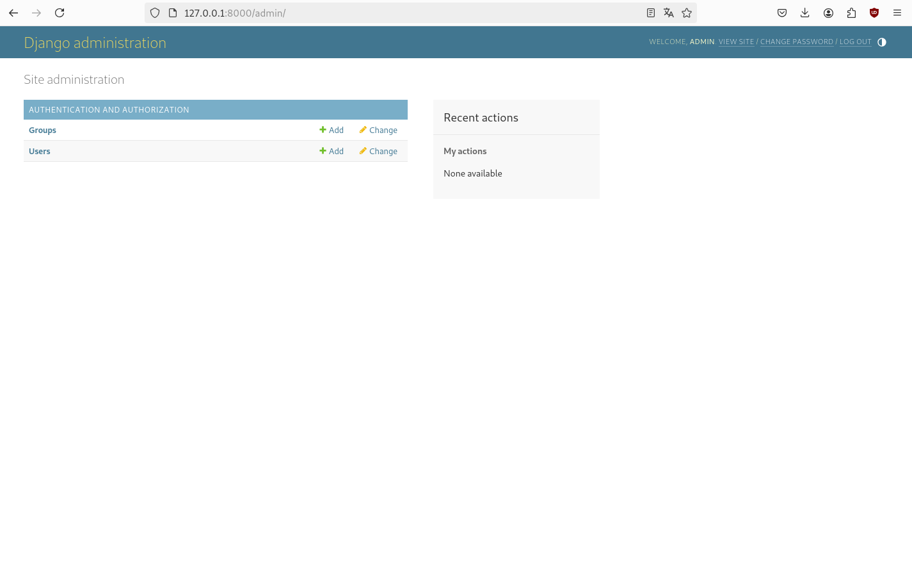Installation des Pakets
python3 -m pip install django-debug-toolbar
Anpassen der Konfiguration
komserv/settings.py
#...
# Application definition
INSTALLED_APPS = [
#...
'debug_toolbar',
#...
]
#...
MIDDLEWARE = [
#...
'debug_toolbar.middleware.DebugToolbarMiddleware',
]
#...
INTERNAL_IPS = [
# ...
"127.0.0.1",
# ...
]
Erweiterung der URLs
komserv/urls.py
#...
from django.contrib.staticfiles.urls import staticfiles_urlpatterns
from debug_toolbar.toolbar import debug_toolbar_urls
#...
urlpatterns += staticfiles_urlpatterns() + debug_toolbar_urls()
Mit Debug Toolbar
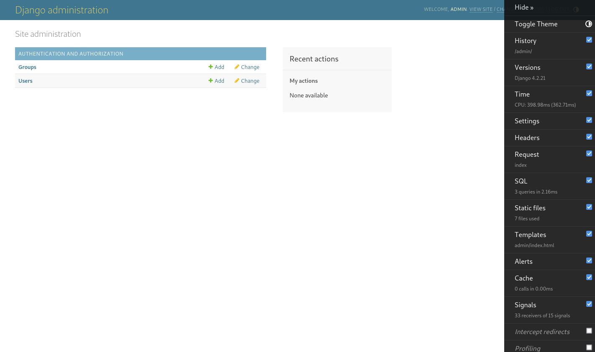<!DOCTYPE html>
<html>
<head>
<meta charset="utf-8"/>
<meta name="description" content="Author: Armin Retterath, XPlanung, Django, Formular, Easy, kostenfrei, Open Source"/>
<title>{% block title %}{% endblock %}</title>
{% load static %}
<link rel="stylesheet" type="text/css" href="{% static 'xplanung_light/site.css' %}"/>
</head>
<body>
<div class="navbar">
<a href="{% url 'home' %}" class="navbar-brand">XPlanung light</a>
<a href="{% url 'about' %}" class="navbar-item">Über</a>
{% if user.is_authenticated %}
<p>
Angemeldeter Benutzer: {{ user.username }} <br>
<a href="{% url 'logout' %}" class="navbar-item">Abmelden</a>
</p>
<p><a href="{% url 'admin:index' %}" >Admin Backend</a></p>
{% else %}
<a href="{% url 'login' %}" class="navbar-item">Anmelden</a>
{% endif %}
</div>
<div class="body-content">
{% block content %}
{% endblock %}
<hr/>
<footer>
<p>© 2025</p>
<p>Letzte Änderung: 2025-04-04 11:40 Initiales Anlegen</p>
</footer>
</div>
</body>
</html>
Function based views für home und about Seiten - xplanung_light/views.py
#...
from django.shortcuts import render
def home(request):
return render(request, "xplanung_light/home.html")
def about(request):
return render(request, "xplanung_light/about.html")
#...
url für about zu xplanung_light/urls.py hinzufügen
#...
path("about/", views.about, name="about"),
#...
{% extends "xplanung_light/layout.html" %}
{% block title %}
Home
{% endblock %}
{% block content %}
<p>Einfache Webanwendung zur Verwaltung kommunaler Pläne gemäß dem aktuellen Standard <a href="https://xleitstelle.de/xplanung" target="_blank">XPlanung</a></p>
<p>Der Betreiber übernimmt keinerlei Verantwortung für die Funktionsfähigkeit und Zuverlässigkeit der Anwendung. Es handelt sich nur um ein <b>Proof of Concept</b>. Solange die Anwendung online ist, kann und darf sie von jedermann kostenfrei verwendet werden. Für die Sicherheit der Daten wird ebenfalls keine Verantwortung übernommen. Nutzer sollten nur ihre eigenen Daten sehen und editieren können. Das Projekt dient als Test zur Prüfung von Funktionen des zugrundeliegenden Webframeworks <a href="https://www.djangoproject.com/" target="_blank">Django</a> und wurde innerhalb weniger Tage unter Nutzung von <a href="https://docs.djangoproject.com/en/5.0/topics/class-based-views/generic-display/" target="_blank">class-based generic views</a> umgesetzt ;-) .</p>
<h4>Funktionen</h4>
<ul>
<li>...</li>
<li>...</li>
</ul>
<h4>Technische Informationen</h4>
<ul>
<li><a href="#" target="_blank">Projekt auf GitHub</a></li>
<li><a href="#" target="_blank">Github Repo der ...</a></li>
<li><a href="#" target="_blank">Standard</a></li>
</ul>
<h4>Validatoren</h4>
<ul>
<li><a href="#" target="_blank">...</a></li>
</ul>
{% endblock %}
{% extends "xplanung_light/layout.html" %}
{% block title %}
Über
{% endblock %}
{% block content %}
<p>Anwendung zur einfachen Verwaltung von kommunalen Plänen, konform zum deutschen Standard <b>XPlanung</b>.</p>
{% endblock %}
from django.contrib.auth import views as auth_views
#...
path("accounts/login/", auth_views.LoginView.as_view(next_page="home"), name="login"),
path("accounts/logout/", auth_views.LogoutView.as_view(next_page="home"), name='logout'),
# https://dev.to/donesrom/how-to-set-up-django-built-in-registration-in-2023-41hg
path("register/", views.register, name = "register"),
#...
Erstellung des Verzeichnisses für registration - pwd: komserv2/xplanung_light/templates/
mkdir xplanung_light/templates/registration
xplanung_light/templates/registration/login.html
{% extends "../xplanung_light/layout.html" %}
{% block content %}
{% if form.errors %}
<p>Your username and password didn't match. Please try again.</p>
{% endif %}
{% if next %}
{% if user.is_authenticated %}
<p>Your account doesn't have access to this page. To proceed,
please login with an account that has access.</p>
{% else %}
<p>Please login to see this page.</p>
{% endif %}
{% endif %}
<form method="post" action="{% url 'login' %}">
{% csrf_token %}
<table>
<tr>
<td>{{ form.username.label_tag }}</td>
<td>{{ form.username }}</td>
</tr>
<tr>
<td>{{ form.password.label_tag }}</td>
<td>{{ form.password }}</td>
</tr>
</table>
<input type="submit" value="Einloggen">
<input type="hidden" name="next" value="{{ next }}">
</form>
<p>Noch keinen Zugang? <a href="{% url 'register' %}" class="navbar-item">Hier Registrieren</a></p>
{# Assumes you set up the password_reset view in your URLconf #}
{# <p><a href="{% url 'password_reset' %}">Lost password?</a></p> #}
{% endblock %}
xplanung_light/templates/registration/register.html
{% extends "../xplanung_light/layout.html" %}
{% block content %}
<h2>Registrieren</h2>
<form method="post">
{% csrf_token %}
{{form.as_p}}
<button type="submit">Registrieren</button>
</form>
{% endblock %}
xplanung_light/forms.py
from django import forms
from django.contrib.auth.forms import UserCreationForm
from django.contrib.auth.models import User
class RegistrationForm(UserCreationForm):
email = forms.EmailField(required=True)
class Meta:
model = User
fields = ['username', 'email', 'password1', 'password2']
xplanung_light/views.py
#...
from xplanung_light.forms import RegistrationForm
from django.shortcuts import redirect
from django.contrib.auth import login
#...
# https://dev.to/balt1794/registration-page-using-usercreationform-django-part-1-21j7
def register(request):
if request.method != 'POST':
form = RegistrationForm()
else:
form = RegistrationForm(request.POST)
if form.is_valid():
form.save()
user = form.save()
login(request, user)
return redirect('home')
else:
print('form is invalid')
context = {'form': form}
return render(request, 'registration/register.html', context)
xplanung_light/static/xplanung_light/site.css
/* ... */
.navbar {
background-color: lightslategray;
font-size: 1em;
font-family: 'Trebuchet MS', 'Lucida Sans Unicode', 'Lucida Grande', 'Lucida Sans', Arial, sans-serif;
color: white;
padding: 8px 5px 8px 5px;
}
.navbar a {
text-decoration: none;
color: inherit;
}
.navbar-brand {
font-size: 1.2em;
font-weight: 600;
}
.navbar-item {
font-variant: small-caps;
margin-left: 30px;
}
.body-content {
padding: 5px;
font-family:'Segoe UI', Tahoma, Geneva, Verdana, sans-serif;
}
Nutzung von Templates
Einfache function based views
Anwendnung von css
Formulare
Registrierung
Authentifizierung
Dokumentation auf xplanung_light/templates/xplanung_light/home.html
<!-- ... -->
<h4>Funktionen</h4>
<ul>
<li>Homepage</li>
<li>Authentifizierung gegen Datenbank</li>
<li>Registrierung</li>
<li>Admin-Backend</li>
<li>...</li>
</ul>
<!-- ... -->
Aussehen nach Anmeldung des admin im Frontend
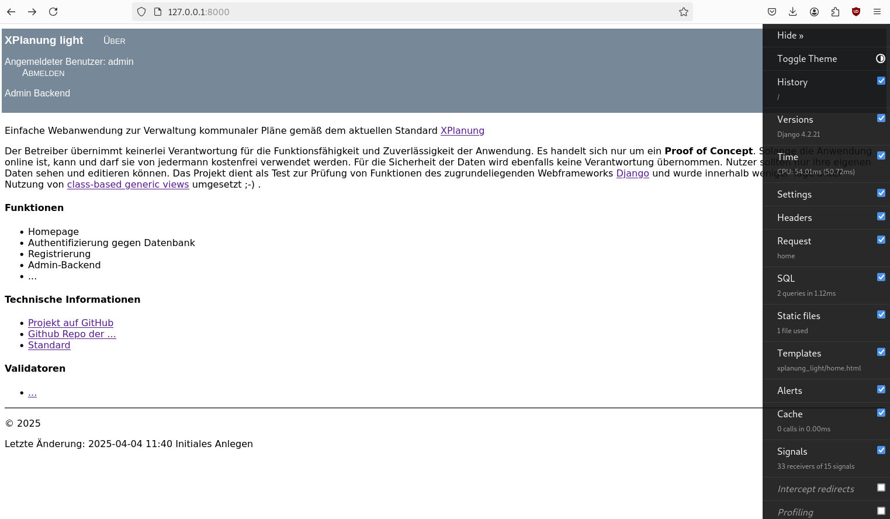Installation per pip
python3 -m pip install django-bootstrap5
Aktvieren in komserv/settings.py
#...
INSTALLED_APPS = [
'django.contrib.admin',
'django.contrib.auth',
'django.contrib.contenttypes',
'django.contrib.sessions',
'django.contrib.messages',
'django.contrib.staticfiles',
'xplanung_light',
#...
'django_bootstrap5',
#...
]
#...
Anpassen des Basis-Templates xplanung_light/templates/xplanung_light/layout.html
{# Load the tag library #}
{% load django_bootstrap5 %}
{# Load CSS and JavaScript #}
{% bootstrap_css %}
{% bootstrap_javascript %}
{# Display django.contrib.messages as Bootstrap alerts #}
{% bootstrap_messages %}
<!DOCTYPE html>
<html>
<head>
<meta charset="utf-8"/>
<meta name="description" content="Author: Armin Retterath, XPlanung, Django, Formular, Easy, kostenfrei, Open Source"/>
<title>{% block title %}{% endblock %}</title>
{% load static %}
<link rel="stylesheet" type="text/css" href="{% static 'xplanung_light/site.css' %}"/>
</head>
<body>
<!-- https://getbootstrap.com/docs/5.0/components/navbar/ -->
<nav class="navbar navbar-expand-lg navbar-dark bg-dark">
<div class="container-fluid">
<a class="navbar-brand" href="{% url 'home' %}">XPlanung light</a>
<button class="navbar-toggler" type="button" data-bs-toggle="collapse" data-bs-target="#navbarTogglerDemo01" aria-controls="navbarTogglerDemo01" aria-expanded="false" aria-label="Toggle navigation">
<span class="navbar-toggler-icon"></span>
</button>
<div class="collapse navbar-collapse" id="navbarTogglerDemo01">
<ul class="navbar-nav me-auto mb-2 mb-lg-0">
<li class="nav-item">
<a class="nav-link" aria-current="page" href="{% url 'about' %}">Über</a>
</li>
{% if user.is_authenticated %}
<li class="nav-item">
<a class="nav-link" aria-current="page" href="{% url 'admin:index' %}">Admin Backend</a>
</li>
{% endif %}
</ul>
<div class="d-flex">
{% if user.is_authenticated %}
<p>
Angemeldeter Benutzer: {{ user.username }} <br>
<a href="{% url 'logout' %}">Abmelden</a>
</p>
{% else %}
<a href="{% url 'login' %}">Anmelden</a>
{% endif %}
</div>
</div>
</div>
</nav>
<div class="body-content">
{% block content %}
{% endblock %}
<hr/>
<footer>
<p>© 2025</p>
<p>Letzte Änderung: 2025-04-07 14:22 Bootstrap 5 Integration</p>
</footer>
</div>
</body>
</html>
xplanung_light/templates/registration/register.html
{% extends "../xplanung_light/layout.html" %}
{% load django_bootstrap5 %}
{% bootstrap_css %}
{% bootstrap_javascript %}
{% block content %}
<h2>Registrieren</h2>
<form method="post">
{% csrf_token %}
{% bootstrap_form form %}
{% bootstrap_button button_type="submit" content="Registrieren" %}
</form>
{% endblock %}
Frontend mit bootstrap5
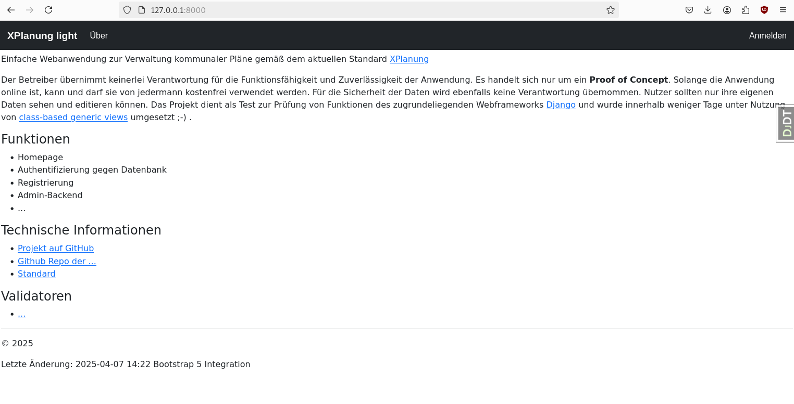Registrierungsformular mit bootstrap5
http://127.0.0.1:8000/register/
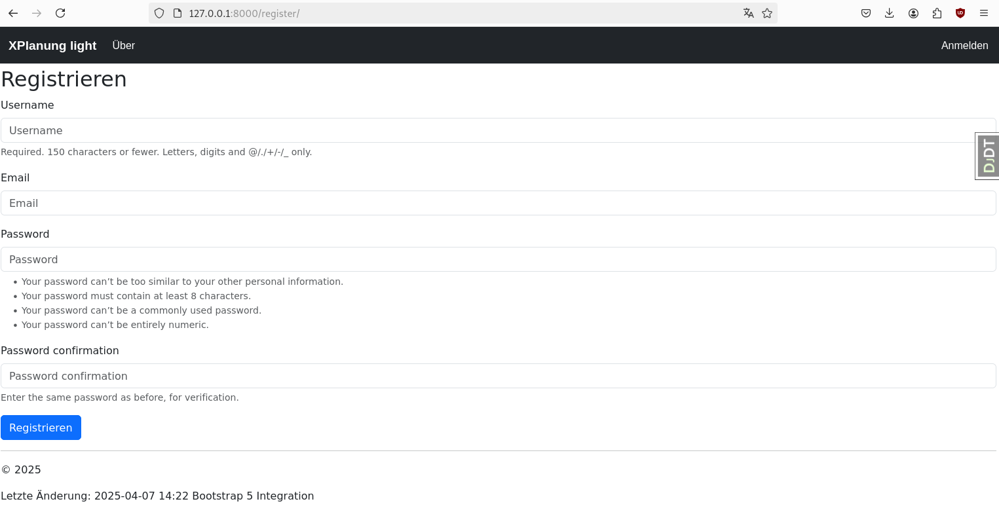Neben der Verwaltung räumlicher Daten, wie z.B. den Zuständigkeitsbereichen von Verwaltungen und Geltungsbereichen von Plänen beinhaltet das Modell organisatorische Zuständigkeiten, die einem zeitlichen Wandel unterliegen. Organisationsstrukturen könnne sich im Lauf von mehreren Jahren ändern und daher ist es sinnvoll diese zu historisieren. Man kann sich ein eigenes Historienkonzept überlegen, oder man nutzt ein vorhandenes Package. In diesem Fall wird django-simple-history genutzt.
Installation des packages
python3 -m pip install django-simple-history
Aktivierung in komserv/settings.py
#...
INSTALLED_APPS = [
# ...
'simple_history',
]
#...
MIDDLEWARE = [
# ...
'simple_history.middleware.HistoryRequestMiddleware',
]
#...
Migration des Datenmodells
python3 manage.py makemigrations
python3 manage.py migrate
Da GeoDjango verwendet werden soll, müssen wir zunächst die Datenbank von SQLITE auf SPATIALITE ändern. Hierzu reicht eine Anpassung in der globalen Konfigurationsdatei.
Aktivierung in komserv/settings.py
DATABASES = {
'default': {
#'ENGINE': 'django.db.backends.sqlite3',
'ENGINE': 'django.contrib.gis.db.backends.spatialite',
'NAME': BASE_DIR / 'db.sqlite3',
}
}
Damit sind die Vorbreitungen auch schon abgeschlossen. Jetzt folgt die Definition der benötigten Datenmodelle.
Das initiale Modell für verantwortliche Organisationen soll die Gebietskörperschaften des Landes abbilden. Diese sind grundsätzlich hierarchisch geliedert und verfügen über bundesweit einheitlich definierte Schlüssel (AGS). Verantwortlich für die Bereitstellung der Struktur der Gebietskörperschaften ist in Rheinland-Pfalz das Statistische Landesamt. Dieses publiziert das s.g. Amtliche Verzeichnis der Gemeinden und Gemeindeteile in Form einer PDF-Datei. Leider lässt sich das nicht ohne weiteres automatisiert verarbeiten, es gibt jedoch auch ein Verzeichnis der Kommunalverwaltungen, Oberbürgermeister, Landräte und Bürgermeister . Dieses wird als xslm Mappe publiziert und enthält über verschiedene Tabellen verteilt die für unseren Zweck benötigte information.
Wir benötigen sowohl Kontaktinformationen, als auch Adressen und Zuständigkeitsbereiche. Die Zuständigkeitsbereiche werden vom Landesamt für Vermessung und Geobasisinformation über eine OGC-WFS Schnittstelle publiziert und enthalten auch die jeweiligen einheitlichen AGS. Damit lassen sie sich automatisiert mit den Organisationen verknüpfen. Um das Modell nicht unnötig kompliziwert zu machen, speichern wir alle Informationen zunächst in einem einfachen flachen Modell. In Django werden Modelle pro App in einer Datei models.py abgelegt. In unserem Fall also xplanung_light/models.py. Da die Modelle python-Klassen sind, lässt sich vieles über Vererbung umsetzen. Wir definieren dazu einfach eine simple Klasse GenericMetadata, die zunächst einfach eine automatisch generierte UUID beinhaltet, die die davon abgeleiteteten Klassen erben. Die Integration von django-simple-history ist sehr einfach und erfolgt durch das Attribut history = HistoricalRecords() .
xplanung_light/models.py
from django.db import models
from django.contrib.auth.models import User
import uuid
from simple_history.models import HistoricalRecords
from django.contrib.gis.db import models
# generic meta model
class GenericMetadata(models.Model):
generic_id = models.UUIDField(default = uuid.uuid4)
#created = models.DateTimeField(null=True)
#changed = models.DateTimeField(null=True)
#deleted = models.DateTimeField(null=True)
#active = models.BooleanField(default=True)
#owned_by_user = models.ForeignKey(User, on_delete=models.CASCADE, null=True)
class Meta:
abstract = True
"""def save(self, *args, **kwargs):
self.owned_by_user= self.request.user
super().save(*args, **kwargs)"""
# administrative organizations
class AdministrativeOrganization(GenericMetadata):
COUNTY = "KR"
COUNTY_FREE_CITY = "KFS"
COM_ASS = "VG"
COM_ASS_FREE_COM = "VFG"
COM = "GE"
UNKNOWN = "UK"
ADMIN_CLASS_CHOICES = [
(COUNTY, "Landkreis"),
(COUNTY_FREE_CITY, "Kreisfreie Stadt"),
(COM_ASS, "Verbandsgemeinde"),
(COM_ASS_FREE_COM, "Verbandsfreie Gemeinde"),
(COM, "Gemeinde/Stadt"),
(UNKNOWN, "unbekannt"),
]
ls = models.CharField(max_length=2, verbose_name='Landesschlüssel', help_text='Eindeutiger zweistelliger Schlüssel für das Bundesland - RLP: 07', default='07')
ks = models.CharField(max_length=3, verbose_name='Kreisschlüssel', help_text='Eindeutiger dreistelliger Schlüssel für den Landkreis', default='000')
vs = models.CharField(max_length=2, verbose_name='Gemeindeverbandsschlüssel', help_text='Eindeutiger zweistelliger Schlüssel für den Gemeindeverband', default='00')
gs = models.CharField(max_length=3, verbose_name='Gemeindeschlüssel', help_text='Eindeutiger dreistelliger Schlüssel für die Gemeinde', default='000')
name = models.CharField(max_length=1024, verbose_name='Name der Gebietskörperschaft', help_text='Offizieller Name der Gebietskörperschaft - z.B. Rhein-Lahn-Kreis')
type = models.CharField(max_length=3, choices=ADMIN_CLASS_CHOICES, default='UK', verbose_name='Typ der Gebietskörperschaft', db_index=True)
address_street = models.CharField(blank=True, null=True, max_length=1024, verbose_name='Straße mit Hausnummer', help_text='Straße und Hausnummer')
address_postcode = models.CharField(blank=True, null=True, max_length=5, verbose_name='Postleitzahl', help_text='Postleitzahl')
address_city = models.CharField(max_length=256, blank=True, null=True, verbose_name='Stadt')
address_phone = models.CharField(max_length=256, blank=True, null=True, verbose_name='Telefon')
address_facsimile = models.CharField(max_length=256, blank=True, null=True, verbose_name='Fax')
address_email = models.EmailField(max_length=512, blank=True, null=True, verbose_name='EMail')
address_homepage = models.URLField(blank=True, null=True, verbose_name='Homepage')
geometry = models.GeometryField(blank=True, null=True, verbose_name='Gebiet')
history = HistoricalRecords()
def __str__(self):
"""Returns a string representation of a administrative unit."""
return f"'{self.type}' '{self.name}'"
Migration
python3 manage.py makemigrations
python3 manage.py migrate
Da die benötigten Daten für die Organisationen als xslm und in Form von Webservices bereitstehen, benötigen wir zwei weitere python-Bibliotheken.
python3 -m pip install openpyxl
python3 -m pip install requests
Wir laden die xslm Datei zunächst händisch herunter und legen sie in unser Arbeitsverzeichnis.
Verzeichnis der Kommunalverwaltungen, Oberbürgermeister, Landräte und Bürgermeister
Die Funktionen für den Import speichern wir in xplanung_light/views.py. Hier ist wichtig, dass die Proxy-Einstellungen in der Datei angepasst werden. Für produktive Zwecke ist es besser, die Proxy-Konfiguration in der zentralen Konfigurationsdatei abzulegen und zu importieren. Hierzu später mehr.
xplanung_light/views.py
#...
from xplanung_light.models import AdministrativeOrganization
from django.contrib.gis.geos import GEOSGeometry
from openpyxl import Workbook, load_workbook
import requests
#...
PROXIES = {
'http_proxy': 'http://xxx:8080',
'https_proxy': 'http://xxx:8080',
}
def get_geometry(type, ags):
if type =='KR' or type =='KFS':
base_uri = "https://www.geoportal.rlp.de/spatial-objects/314/collections/vermkv:landkreise_rlp"
param_dict = {'f': 'json', 'kreissch': ags[:3]}
if type =='VG' or type =='VFG':
base_uri = "https://www.geoportal.rlp.de/spatial-objects/314/collections/vermkv:verbandsgemeinde_rlp"
param_dict = {'f': 'json', 'vgnr': ags[:5]}
if type == 'GE':
base_uri = "https://www.geoportal.rlp.de/spatial-objects/314/collections/vermkv:gemeinde_rlp"
param_dict = {'f': 'json', 'ags': "*7" + ags}
resp = requests.get(url=base_uri, params=param_dict, proxies=PROXIES)
print(base_uri)
print(str(param_dict))
data = resp.json()
return str(data['features'][0]['geometry'])
def import_organisations():
wb = load_workbook('Kommunalverwaltungen_01.01_2025.xlsm')
# nuts-1 - bundeslandebene
# nuts-2 - regierungsbezirke
# nuts-3 - landkreisebene
# lau-1 - verbandsgemeindeebene
# lau-2 - gemeideebene
table_all_admin_units = wb.worksheets[10]
table_nuts_3_1 = wb.worksheets[5]
table_nuts_3_2 = wb.worksheets[6]
table_lau_1_1 = wb.worksheets[8]
table_lau_1_2 = wb.worksheets[7]
# table_lau_2 = wb.worksheets[10]
count_landkreise = 0
count_kreisfreie_staedte = 0
count_verbandsgemeinden = 0
count_verbandsfreie_gemeinden = 0
count_gemeinden = 0
# read landkreisebene
landkreisebene = {}
i = 0
for row in table_nuts_3_1.iter_rows(values_only=True):
i = i + 1
if i > 2:
if row[0] != None:
landkreis = {}
landkreis['kr'] = row[0]
landkreis['vg'] = row[2]
landkreis['ge'] = row[1]
landkreis['name'] = row[4]
landkreis['type'] = 'KR'
landkreis['address'] = {}
landkreis['address']['street'] = row[9]
landkreis['address']['postcode'] = row[10]
landkreis['address']['city'] = row[11]
landkreis['address']['phone'] = str(row[12]) + '/' + str(row[13])
landkreis['address']['facsimile'] = str(row[12]) + '/' + str(row[14])
landkreis['address']['email'] = str(row[15])
landkreis['address']['homepage'] = "https://" + str(row[16])
landkreisebene[row[0] + row[2] + row[1]] = landkreis
count_landkreise = count_landkreise + 1
i = 0
for row in table_nuts_3_2.iter_rows(values_only=True):
i = i + 1
if i > 2:
if row[0] != None:
kreisfreie_stadt = {}
kreisfreie_stadt['kr'] = row[0]
kreisfreie_stadt['vg'] = row[2]
kreisfreie_stadt['ge'] = row[1]
kreisfreie_stadt['name'] = row[4]
kreisfreie_stadt['type'] = 'KFS'
kreisfreie_stadt['address'] = {}
kreisfreie_stadt['address']['street'] = row[9]
kreisfreie_stadt['address']['postcode'] = row[10]
kreisfreie_stadt['address']['city'] = row[11]
kreisfreie_stadt['address']['phone'] = str(row[12]) + '/' + str(row[13])
kreisfreie_stadt['address']['facsimile'] = str(row[12]) + '/' + str(row[14])
kreisfreie_stadt['address']['email'] = str(row[15])
kreisfreie_stadt['address']['homepage'] = "https://" + str(row[16])
landkreisebene[row[0] + row[2] + row[1]] = kreisfreie_stadt
count_kreisfreie_staedte = count_kreisfreie_staedte + 1
# read verbandsgemeindeebene
verbandsgemeindeebene = {}
i = 0
for row in table_lau_1_1.iter_rows(values_only=True):
i = i + 1
if i > 2:
if row[0] != None:
vg = {}
vg['kr'] = row[0]
vg['vg'] = row[2]
vg['ge'] = row[1]
vg['name'] = row[4]
vg['type'] = 'VG'
vg['address'] = {}
vg['address']['street'] = row[9]
vg['address']['postcode'] = row[10]
vg['address']['city'] = row[11]
vg['address']['phone'] = str(row[12]) + '/' + str(row[13])
vg['address']['facsimile'] = str(row[12]) + '/' + str(row[14])
vg['address']['email'] = str(row[15])
vg['address']['homepage'] = "https://" + str(row[16])
verbandsgemeindeebene[row[0] + row[2] + row[1]] = vg
count_verbandsgemeinden = count_verbandsgemeinden + 1
i = 0
for row in table_lau_1_2.iter_rows(values_only=True):
i = i + 1
if i > 2:
if row[0] != None:
vg = {}
vg['kr'] = row[0]
vg['vg'] = row[2]
vg['ge'] = row[1]
vg['name'] = row[4]
vg['type'] = 'VFG'
vg['address'] = {}
vg['address']['street'] = row[9]
vg['address']['postcode'] = row[10]
vg['address']['city'] = row[11]
vg['address']['phone'] = str(row[12]) + '/' + str(row[13])
vg['address']['facsimile'] = str(row[12]) + '/' + str(row[14])
vg['address']['email'] = str(row[15])
vg['address']['homepage'] = "https://" + str(row[16])
verbandsgemeindeebene[row[0] + row[2] + row[1]] = vg
count_verbandsfreie_gemeinden = count_verbandsfreie_gemeinden + 1
#print(json.dumps(landkreise))
all_admin_units = {}
i = 0
for row in table_all_admin_units.iter_rows(values_only=True):
i = i + 1
if i > 2:
if row[0] != None:
admin_unit = {}
admin_unit['kr'] = row[0]
admin_unit['vg'] = row[1]
admin_unit['ge'] = row[2]
admin_unit['name'] = row[3]
print(admin_unit['name'])
admin_unit['plz'] = row[4]
admin_unit['type'] = 'GE'
if row[1] == '00' and row[2] == '000':
admin_unit['type'] = landkreisebene[row[0] + row[1] + row[2]]['type']
admin_unit['address'] = landkreisebene[row[0] + row[1] + row[2]]['address']
if row[1] != '00' and row[2] == '000':
admin_unit['type'] = verbandsgemeindeebene[row[0] + row[1] + row[2]]['type']
admin_unit['address'] = verbandsgemeindeebene[row[0] + row[1] + row[2]]['address']
admin_unit['geometry'] = get_geometry(admin_unit['type'], str(row[0]) + str(row[1]) + str(row[2]))
all_admin_units[str(row[0]) + str(row[1]) +str(row[2])] = admin_unit
#save object to database
obj, created = AdministrativeOrganization.objects.update_or_create(
ks=admin_unit['kr'],
vs=admin_unit['vg'],
gs=admin_unit['ge'],
defaults={
"ks": admin_unit['kr'],
"vs": admin_unit['vg'],
"gs": admin_unit['ge'],
"name": admin_unit['name'],
"type": admin_unit['type'],
"geometry": GEOSGeometry(admin_unit['geometry'])
},
)
"""
administration = AdministrativeOrganization()
administration.ks = admin_unit['kr']
administration.vs = admin_unit['vg']
administration.gs = admin_unit['ge']
administration.name = admin_unit['name']
administration.type = admin_unit['type']
administration.geometry = GEOSGeometry(admin_unit['geometry'])
administration.save()
"""
print("Landkreise:" + str(count_landkreise))
print("Kreisfreie Städte:" + str(count_kreisfreie_staedte))
print("Verbandsgemeinden:" + str(count_verbandsgemeinden))
print("Verbandsfreie Gemeinden:" + str(count_verbandsfreie_gemeinden))
print(i)
Der initiale Import wird einfach von der shell gestartet. Wir nutzen hier die Django shell, über die man direkten Zugriff auf die Funktionen im Projekt erhält.
python3 manage.py shell
from xplanung_light.views import import_organisations
import_organisations()
Das Modell zur Verwaltung von kommunalen Plänen orientiert sich am deutschen Standard XPlanung und am Leitfaden für die Bereitstellung kommunaler Pläne und Satzungen im Rahmen der Geodateninfrastruktur Rheinland-Pfalz (GDI-RP) . Dieser Leitfaden wurde ab 2008 auf Basis von XPlanung 2.0 entwickelt. Neben den Vorgaben des Datenaustauschstandards wurden dabei auch Anforderungen aus der kommunalen Praxis übernommen und eine standardisierte Bereitstellung vorgegeben. Der Standard wurde mit den kommunalen Spitzenverbänden des Landes abgestimmt und wird vom Lenkungsausschuss für Geodateninfrastruktur Rheinland-Pfalz herausgegeben.
In einer ersten Version des Modells wird nur eine minimale Zahl von Attributen definiert. Für den proof of concept (POC) ist das zunächst ausreichend. Das abstrakte Grundmodell heißt XPlan und vererbt seine Attribute auf das konkrete Modell BPlan. Der Geltungsbereich ist als Geometry-Field modelliert und kann damit auch Multipolygone aufnehmen.
xplanung_light/models.py
"""
https://xleitstelle.de/releases/objektartenkatalog_6_0
"""
class XPlan(models.Model):
name = models.CharField(null=False, blank=False, max_length=2048, verbose_name='Name des Plans', help_text='Offizieller Name des raumbezogenen Plans')
#nummer [0..1]
nummer = models.CharField(max_length=5, verbose_name="Nummer des Plans.")
#internalId [0..1]
#beschreibung [0..1]
#kommentar [0..1]
#technHerstellDatum [0..1], Date
#genehmigungsDatum [0..1], Date
#untergangsDatum [0..1], Date
#aendertPlan [0..*], XP_VerbundenerPlan
#wurdeGeaendertVonPlan [0..*], XP_VerbundenerPlan
#aendertPlanBereich [0..*], Referenz, Testphase
#wurdeGeaendertVonPlanBereich [0..*], Referenz, Testphase
#erstellungsMassstab [0..1], Integer
#bezugshoehe [0..1], Length
#hoehenbezug [0..1]
#technischerPlanersteller, [0..1]
#raeumlicherGeltungsbereich [1], GM_Object
geltungsbereich = models.GeometryField(null=False, blank=False, verbose_name='Grenze des räumlichen Geltungsbereiches des Plans.')
#verfahrensMerkmale [0..*], XP_VerfahrensMerkmal
#hatGenerAttribut [0..*], XP_GenerAttribut
#externeReferenz, [0..*], XP_SpezExterneReferenz
#texte [0..*], XP_TextAbschnitt
#begruendungsTexte [0..*], XP_BegruendungAbschnitt
history = HistoricalRecords(inherit=True)
class Meta:
abstract = True
class BPlan(XPlan):
BPLAN = "1000"
EINFACHERBPLAN = "10000"
QUALIFIZIERTERBPLAN = "10001"
BEBAUUNGSPLANZURWOHNRAUMVERSORGUNG = "10002"
VORHABENBEZOGENERBPLAN = "3000"
VORHABENUNDERSCHLIESSUNGSPLAN = "3100"
INNENBEREICHSSATZUNG = "4000"
KLARSTELLUNGSSATZUNG = "40000"
ENTWICKLUNGSSATZUNG = "40001"
ERGAENZUNGSSATZUNG = "40002"
AUSSENBEREICHSSATZUNG = "5000"
OERTLICHEBAUVORSCHRIFT = "7000"
SONSTIGES = "9999"
BPLAN_TYPE_CHOICES = [
(BPLAN, "BPlan"),
(EINFACHERBPLAN, "EinfacherBPlan"),
(QUALIFIZIERTERBPLAN, "QualifizierterBPlan"),
(BEBAUUNGSPLANZURWOHNRAUMVERSORGUNG, "BebauungsplanZurWohnraumversorgung"),
(VORHABENBEZOGENERBPLAN, "VorhabenbezogenerBPlan"),
(VORHABENUNDERSCHLIESSUNGSPLAN, "VorhabenUndErschliessungsplan"),
(INNENBEREICHSSATZUNG, "InnenbereichsSatzung"),
(KLARSTELLUNGSSATZUNG, "KlarstellungsSatzung"),
(ENTWICKLUNGSSATZUNG, "EntwicklungsSatzung"),
(ERGAENZUNGSSATZUNG, "ErgaenzungsSatzung"),
(AUSSENBEREICHSSATZUNG, "AussenbereichsSatzung"),
(OERTLICHEBAUVORSCHRIFT, "OertlicheBauvorschrift"),
(SONSTIGES, "Sonstiges"),
]
#gemeinde [1], XP_Gemeinde
gemeinde = models.ForeignKey(AdministrativeOrganization, null=True, on_delete=models.SET_NULL)
#planaufstellendeGemeinde [0..*], XP_Gemeinde
#plangeber [0..*], XP_Plangeber
#planArt [1..*], BP_PlanArt
planart = models.CharField(null=False, blank=False, max_length=5, choices=BPLAN_TYPE_CHOICES, default='1000', verbose_name='Typ des vorliegenden Bebauungsplans.', db_index=True)
#sonstPlanArt [0..1], BP_SonstPlanArt
#rechtsstand [0..1], BP_Rechtsstand
#status [0..1], BP_Status
#aenderungenBisDatum [0..1], Date
#aufstellungsbeschlussDatum [0..1], Date
#veraenderungssperre [0..1], BP_VeraenderungssperreDaten
#auslegungsStartDatum [0..*], Date
#auslegungsEndDatum [0..*], Date
#traegerbeteiligungsStartDatum [0..*], Date
#traegerbeteiligungsEndDatum [0..*], Date
#satzungsbeschlussDatum [0..1], Date
#rechtsverordnungsDatum [0..1], Date
#inkrafttretensDatum [0..1], Date
#ausfertigungsDatum [0..1], Date
#staedtebaulicherVertrag [0..1], Boolean
#erschliessungsVertrag [0..1], Boolean
#durchfuehrungsVertrag [0..1], Boolean
#gruenordnungsplan [0..1], Boolean
#versionBauNVO [0..1], XP_GesetzlicheGrundlage
#versionBauGB [0..1], XP_GesetzlicheGrundlage
#versionSonstRechtsgrundlage [0..*], XP_GesetzlicheGrundlage
#bereich [0..*], BP_Bereich
def __str__(self):
"""Returns a string representation of a BPlan."""
return f"'{self.planart}': '{self.name}'"
Um eine komfortable Verwaltung von Geometrien zu ermöglichen, bietet es sich an das Django Leaflet package ( django-leaflet ) einzusetzen. Standardmäßig ist bei django noch eine älterer OpenLayers-Client (2.13) integriert.
Installation des packages
python3 -m pip install django-leaflet
Aktivieren des packages in komserv/settings.py
#...
'leaflet',
#...
Ersatz des OpenLayer Client im Admin backend - xplanung_light/admin.py
#...
from leaflet.admin import LeafletGeoAdmin
from xplanung_light.models import BPlan
#...
admin.site.register(BPlan, LeafletGeoAdmin)
#...
xplanung_light/urls.py
#...
from xplanung_light.views import BPlanCreateView, BPlanUpdateView, BPlanDeleteView, BPlanListView
#...
# urls for bplan
path("bplan/", BPlanListView.as_view(), name="bplan-list"),
path("bplan/create/", BPlanCreateView.as_view(), name="bplan-create"),
path("bplan/<int:pk>/update/", BPlanUpdateView.as_view(), name="bplan-update"),
path("bplan/<int:pk>/delete/", BPlanDeleteView.as_view(), name="bplan-delete"),
]
Nutzung von einfachen ClassBasedGenericViews
xplanung_light/views.py
#...
from django.views.generic import (ListView, CreateView, UpdateView, DeleteView)
from xplanung_light.models import AdministrativeOrganization, BPlan
from django.urls import reverse_lazy
#...
class BPlanCreateView(CreateView):
model = BPlan
fields = ["name", "nummer", "geltungsbereich", "gemeinde", "planart"]
success_url = reverse_lazy("bplan-list")
class BPlanUpdateView(UpdateView):
model = BPlan
fields = ["name", "nummer", "geltungsbereich", "gemeinde", "planart"]
success_url = reverse_lazy("bplan-list")
class BPlanDeleteView(DeleteView):
model = BPlan
def get_success_url(self):
return reverse_lazy("bplan-list")
class BPlanListView(ListView):
model = BPlan
success_url = reverse_lazy("bplan-list")
xplanung_light/templates/xplanung_light/*
xplanung_light/templates/xplanung_light/bplan_list.html
{% extends "xplanung_light/layout.html" %}
{% block title %}
Liste der Bebauungspläne
{% endblock %}
{% block content %}
<p>Treffer: {{ object_list.count }} Bebauungspläne</p>
{% endblock %}
xplanung_light/templates/xplanung_light/bplan_confirm_delete.html
<form method="post">{% csrf_token %}
<p>Wollen sie das Objekt wirklich löschen? "{{ object }}"?</p>
{{ form }}
<input type="submit" value="Bestätigung">
</form>
xplanung_light/templates/xplanung_light/bplan_form.html
{% extends "xplanung_light/layout.html" %}
{% block title %}
Bebauungsplan anlegen
{% endblock %}
{% block content %}
<form method="post">{% csrf_token %}
{{ form.as_p }}
<input type="submit" value="Save">
</form>
{% endblock %}
xplanung_light/templates/xplanung_light/bplan_form_update.html
{% block title %}
Bebauungsplan editieren
{% endblock %}
{% block content %}
<form method="post">{% csrf_token %}
{{ form.as_p }}
<input type="submit" value="Aktualisieren">
</form>
{% endblock %}
http://127.0.0.1:8000/admin/xplanung_light/bplan/add/
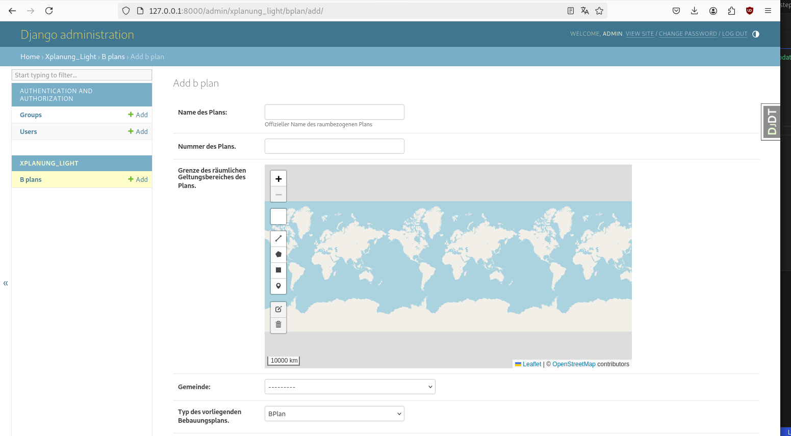Leaflet Integration im Basis-Template xplanung_light/templates/xplanung_light/layout.html
{# ... #}
{# load leaflet specific parts #}
{% load leaflet_tags %}
{% leaflet_css plugins="ALL" %}
{% leaflet_js plugins="ALL" %}
{# ... #}
Anpassung der BPlanCreateView und BPlanUpdateView in xplanung_light/views.py
#...
from leaflet.forms.widgets import LeafletWidget
#...
class BPlanCreateView(CreateView):
model = BPlan
fields = ["name", "nummer", "geltungsbereich", "gemeinde", "planart"]
success_url = reverse_lazy("bplan-list")
def get_form(self, form_class=None):
form = super().get_form(form_class)
form.fields['gemeinde'].queryset = form.fields['gemeinde'].queryset.only("pk", "name", "type")
form.fields['geltungsbereich'].widget = LeafletWidget(attrs={'geom_type': 'MultiPolygon', 'map_height': '500px', 'map_width': '50%','MINIMAP': True})
return form
class BPlanUpdateView(UpdateView):
model = BPlan
fields = ["name", "nummer", "geltungsbereich", "gemeinde", "planart"]
success_url = reverse_lazy("bplan-list")
def get_form(self, form_class=None):
form = super().get_form(form_class)
form.fields['gemeinde'].queryset = form.fields['gemeinde'].queryset.only("pk", "name", "type")
form.fields['geltungsbereich'].widget = LeafletWidget(attrs={'geom_type': 'MultiPolygon', 'map_height': '500px', 'map_width': '50%','MINIMAP': True})
return form
http://127.0.0.1:8000/bplan/create/
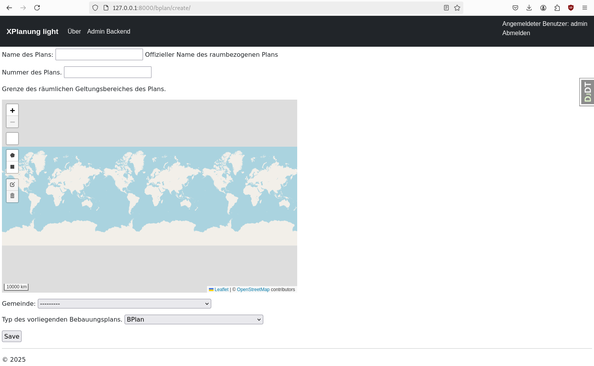Um mit geringem Aufwand eine einfach zu pflegende Tabellenanzeige zu erhalten, bietet sich das package django-tables2 an.
python3 -m pip install django-tables2
Package zu komserv/settings.py hinzufügen
#...
'django_tables2',
#...
Erstellen einer Python-Datei für das Management von Tabellen
xplanung_light/tables.py
import django_tables2 as tables
from .models import BPlan
from django_tables2 import Column
from django_tables2.utils import A
class BPlanTable(tables.Table):
#download = tables.LinkColumn('gedis-document-pdf', text='Download', args=[A('pk')], \
# orderable=False, empty_values=())
edit = tables.LinkColumn('bplan-update', text='Bearbeiten', args=[A('pk')], \
orderable=False, empty_values=())
delete = tables.LinkColumn('bplan-delete', text='Löschen', args=[A('pk')], \
orderable=False, empty_values=())
"""
geojson = Column(
accessor=A('geojson'),
orderable=False,
# ...
)
"""
class Meta:
model = BPlan
template_name = "django_tables2/bootstrap5.html"
fields = ("name", "gemeinde", "edit", "delete")
Anpassung der Klasse BPlanListView in xplanung_light/views.py - Integration des Tabellenmoduls
#...
from django_tables2 import SingleTableView
from xplanung_light.tables import BPlanTable
#...
class BPlanListView(SingleTableView):
model = BPlan
table_class = BPlanTable
success_url = reverse_lazy("bplan-list")
Anpassung der Liste - Hinzufügen eines Create Buttons - xplanung_light/templates/xplanung_light/bplan_list.html
{# .... #}
{% load render_table from django_tables2 %}
<!-- add boostrap form css -->
{% load django_bootstrap5 %}
{% block content %}
<p><a href="{% url 'bplan-create' %}">BPlan anlegen</a></p>
{% render_table table %}
{# .... #}
Menüeintrag für Bebauungspläne hinzufügen - xplanung_light/templates/xplanung_light/layout.html
{# .... #}
<ul class="navbar-nav me-auto mb-2 mb-lg-0">
{% if user.is_authenticated %}
<li class="nav-item">
<a class="nav-link" aria-current="page" href="{% url 'bplan-list' %}">Bebauungspläne</a>
</li>
{% endif %}
<li class="nav-item">
{# .... #}
Datenmodelle migrieren
python3 manage.py makemigrations
python3 manage.py migrate
komserv/settings.py
#...
LEAFLET_CONFIG = {
# conf here
'SPATIAL_EXTENT': (6.0, 49.0, 8.5, 52),
'DEFAULT_CENTER': (7.0, 50.0),
'DEFAULT_ZOOM': 7,
'MIN_ZOOM': 2,
'MAX_ZOOM': 20,
'DEFAULT_PRECISION': 6,
}
#...
Muss im im jeweiligen Template erfolgen, da die zentrale Leaflet Konfiguration nur zusätzliche Tiled Layer erlaubt. Siehe auch https://stackoverflow.com/questions/66938889/how-to-add-leaflet-extensions-marker-basemap-geocoder-to-django-leaflet
xplanung_light/templates/xplanung_light/bplan_form.html
{% extends "xplanung_light/layout.html" %}
{% block title %}
Bebauungsplan anlegen
{% endblock %}
{% block content %}
<script type="text/javascript">
window.addEventListener("map:init", function(e) {
var detail = e.detail;
var map = detail.map;
/* Transparent overlay layers */
var wmsLayer = L.tileLayer.wms('https://geo5.service24.rlp.de/wms/liegenschaften_rp.fcgi?', {
layers: 'Flurstueck',
format: 'image/png',
maxZoom: 20,
transparent: true,
}).addTo(map);
// and many more
}, false
); //end of window.addEventListener
</script>
<form method="post" class="geocoding-form">{% csrf_token %}
{{ form.as_p }}
<input type="submit" value="Speichern">
</form>
{% endblock %}
xplanung_light/templates/xplanung_light/bplan_form_update.html
{% extends "xplanung_light/layout.html" %}
{% block title %}
Bebauungsplan editieren
{% endblock %}
{% block content %}
<script type="text/javascript">
window.addEventListener("map:init", function(e) {
var detail = e.detail;
var map = detail.map;
/* Transparent overlay layers */
var wmsLayer = L.tileLayer.wms('https://geo5.service24.rlp.de/wms/liegenschaften_rp.fcgi?', {
layers: 'Flurstueck',
format: 'image/png',
maxZoom: 20,
transparent: true,
}).addTo(map);
// and many more
}, false
); //end of window.addEventListener
</script>
<form method="post" class="geocoding-form">{% csrf_token %}
{{ form.as_p }}
<input type="submit" value="Aktualisieren">
</form>
{% endblock %}
http://127.0.0.1:8000/admin/xplanung_light/bplan/add/
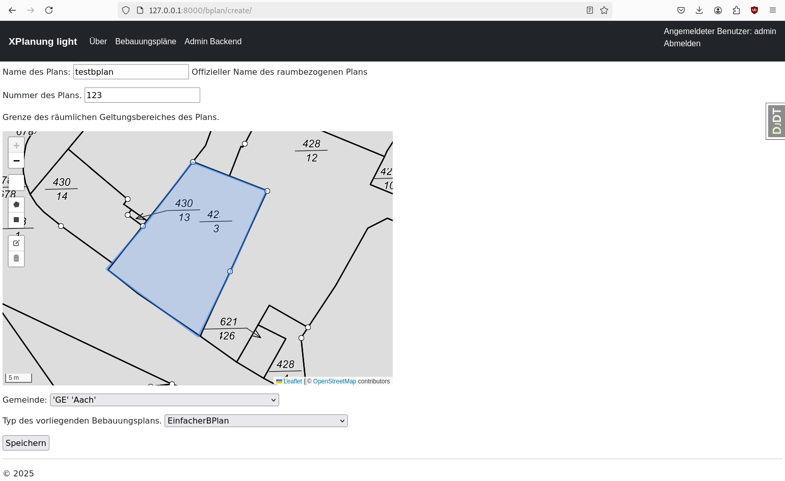Für den interoperablen Datenaustausch müssen die Bebauungsplaninformationen in XPlan-GML exportiert werden können. In Django lassen sich hierfür einfache XML-Templates verwenden. Diese werden zur Laufzeit mit den Daten aus der DB gefüllt. Das Prinzip ist das gleiche wie bei den HTML-Templates.
Für den Export brauchen wir einen View. Da immer nur ein einzelner Bebauungsplan exportiert wird, kann man als Grundlage den Standard Detail View nutzen.
xplanung_light/views.py
#...
from django.views.generic import DetailView
#...
class BPlanDetailView(DetailView):
model = BPlan
#...
Dieser vererbt seine Struktur an den neuen Export View. Für ein konformes XPlan-GML sind einige Vorarbeiten nötig. Wir brauchen die Geometrien für den räumlichen Geltungsbereich im EPSG:25832 und im Format GML3. Das kann man relativ einfach mit einer Erweiterung des querysets mit einer annotation lösen. Zusätzlich zu den Polygonen brauchen wir noch den Extent der Geometrien. Dieser läßt sich aktuell nicht über eine annotation abfragen, sondern muss zur Laufzeit berechnet werden. Dazu nutzen wir die über Geodjango zur Verfügung stehende GDAL Implementierung. Da wir auch das GML3 noch ändern müssen (Ergänzungen von gml_id Attributen), brauchen wir noch die etree-Bibliothek zum Parsen und Schreiben von XML.
xplanung_light/views.py
#...
from django.contrib.gis.db.models.functions import AsGML, Transform
from django.contrib.gis.gdal import CoordTransform, SpatialReference
from django.contrib.gis.gdal import OGRGeometry
import uuid
import xml.etree.ElementTree as ET
#...
class BPlanDetailXmlRasterView(BPlanDetailView):
def get_queryset(self):
# Erweiterung der auszulesenden Objekte um eine transformierte Geomtrie im Format GML 3
queryset = super().get_queryset().annotate(geltungsbereich_gml_25832=AsGML(Transform("geltungsbereich", 25832), version=3))
return queryset
def get_context_data(self, **kwargs):
context = super().get_context_data(**kwargs)
# Um einen XPlanung-konformen Auszug zu bekommen, werden gml_id(s) verwendet.
# Es handelt sich um uuids, die noch das Prefix "GML_" bekommen. Grundsätzlich sollten die
# aus den Daten in der DB stammen und dort vergeben werden.
# Im ersten Schritt synthetisieren wir sie einfach ;-)
context['auszug_uuid'] = "GML_" + str(uuid.uuid4())
context['bplan_uuid'] = "GML_" + str(uuid.uuid4())
# Irgendwie gibt es keine django model function um direkt den Extent der Geometrie zu erhalten. Daher nutzen wir hier gdal
# und Transformieren die Daten erneut im RAM
# Definition der Transformation (Daten sind immer in WGS 84 - 4326)
ct = CoordTransform(SpatialReference(4326, srs_type='epsg'), SpatialReference(25832, srs_type='epsg'))
# OGRGeoemtry Objekt erstellen
ogr_geom = OGRGeometry(str(context['bplan'].geltungsbereich), srs=4326)
# Transformation nach EPSG:25832
ogr_geom.transform(ct)
# Speichern des Extents in den Context
context['extent'] = ogr_geom.extent
# Ausgabe der GML Variante zu Testzwecken
# print(context['bplan'].geltungsbereich_gml_25832)
# Da die GML Daten nicht alle Attribute beinhalten, die XPlanung fordert, müssen wir sie anpassen, bzw. umschreiben
# Hierzu nutzen wir etree
ET.register_namespace('gml','http://www.opengis.net/gml/3.2')
root = ET.fromstring("<?xml version='1.0' encoding='UTF-8'?><snippet xmlns:gml='http://www.opengis.net/gml/3.2'>" + context['bplan'].geltungsbereich_gml_25832 + "</snippet>")
ns = {'gml': 'http://www.opengis.net/gml/3.2',
}
# print("<?xml version='1.0' encoding='UTF-8'?><snippet xmlns:gml='http://www.opengis.net/gml/3.2'>" + context['bplan'].geltungsbereich_gml_25832 + "</snippet>")
# Test ob ein Polygon zurück kommt - damit wäre nur ein einziges Polygon im geometry Field
polygons = root.findall('gml:Polygon', ns)
# print(len(polygons))
if len(polygons) == 0:
# print("Kein Polygon auf oberer Ebene gefunden - es sind wahrscheinlich mehrere!")
multi_polygon_element = root.find('gml:MultiSurface', ns)
uuid_multisurface = uuid.uuid4()
multi_polygon_element.set("gml:id", "GML_" + str(uuid_multisurface))
# Füge gml_id Attribute hinzu - besser diese als Hash aus den Geometrien zu rechnen, oder in Zukunft generic_ids der Bereiche zu verwenden
polygons = root.findall('gml:MultiSurface/gml:surfaceMember/gml:Polygon', ns)
for polygon in polygons:
uuid_polygon = uuid.uuid4()
polygon.set("gml:id", "GML_" + str(uuid_polygon))
context['multisurface_geometry_25832'] = ET.tostring(multi_polygon_element, encoding="utf-8", method="xml").decode('utf8')
else:
polygon_element = root.find('gml:Polygon', ns)
#polygon_element.set("xmlns:gml", "http://www.opengis.net/gml/3.2")
uuid_polygon = uuid.uuid4()
polygon_element.set("gml:id", "GML_" + str(uuid_polygon))
# Ausgabe der Geometrie in ein XML-Snippet - erweitert um den MultiSurface/surfaceMember Rahmen
ET.dump(polygon_element)
context['multisurface_geometry_25832'] = '<gml:MultiSurface srsName="EPSG:25832"><gml:surfaceMember>' + ET.tostring(polygon_element, encoding="utf-8", method="xml").decode('utf8') + '</gml:surfaceMember></gml:MultiSurface>'
return context
""""
def get_object(self):
single_object = super().get_object(self.get_queryset())
# print(single_object.geltungsbereich)
# print(single_object.geltungsbereich_gml_25832)
return single_object
"""
def dispatch(self, *args, **kwargs):
response = super().dispatch(*args, **kwargs)
response['Content-type'] = "application/xml" # set header
return response
Um die Export Funktion nutzen zu können, brauchen wir noch einen neuen Endpunkt.
xplanung_light/urls.py
#...
from xplanung_light.views import BPlanCreateView, BPlanUpdateView, BPlanDeleteView, BPlanListView, BPlanDetailXmlRasterView
#...
# export xplanung gml
path("bplan/<int:pk>/xplan/", BPlanDetailXmlRasterView.as_view(template_name="xplanung_light/bplan_template_xplanung_raster_6.xml"), name="bplan-export-xplan-raster-6"),
#...
Den Link auf den Endpunkt übernehmen wir in die Bebauungsplantabelle
xplanung_light/tables.py
#...
class BPlanTable(tables.Table):
#download = tables.LinkColumn('gedis-document-pdf', text='Download', args=[A('pk')], \
# orderable=False, empty_values=())
xplan_gml = tables.LinkColumn('bplan-export-xplan-raster-6', text='Exportieren', args=[A('pk')], \
orderable=False, empty_values=())
edit = tables.LinkColumn('bplan-update', text='Bearbeiten', args=[A('pk')], \
orderable=False, empty_values=())
delete = tables.LinkColumn('bplan-delete', text='Löschen', args=[A('pk')], \
orderable=False, empty_values=())
"""
geojson = Column(
accessor=A('geojson'),
orderable=False,
# ...
)
"""
class Meta:
model = BPlan
template_name = "django_tables2/bootstrap5.html"
fields = ("name", "gemeinde", "planart", "xplan_gml", "edit", "delete")
Fehlt nur noch das Template ;-)
komserv2/xplanung_light/templates/xplanung_light/bplan_template_xplanung_raster_6.xml
<?xml version="1.0" encoding="utf-8" standalone="yes"?>
<xplan:XPlanAuszug xmlns:xplan="http://www.xplanung.de/xplangml/6/0" xmlns:gml="http://www.opengis.net/gml/3.2" xmlns:xlink="http://www.w3.org/1999/xlink" xmlns:xsi="http://www.w3.org/2001/XMLSchema-instance" xmlns:wfs="http://www.opengis.net/wfs" xmlns:xsd="http://www.w3.org/2001/XMLSchema" xsi:schemaLocation="http://www.xplanung.de/xplangml/6/0 http://repository.gdi-de.org/schemas/de.xleitstelle.xplanung/6.0/XPlanung-Operationen.xsd" gml:id="{{ auszug_uuid }}">
<gml:boundedBy>
<gml:Envelope srsName="EPSG:25832">
<gml:lowerCorner>567015.8040 5937951.7580</gml:lowerCorner>
<gml:upperCorner>567582.8240 5938562.2710</gml:upperCorner>
</gml:Envelope>
</gml:boundedBy>
<gml:featureMember>
<xplan:BP_Plan gml:id="{{ bplan_uuid }}">
<gml:boundedBy>
<gml:Envelope srsName="EPSG:25832">
<gml:lowerCorner>{{ extent.0 }} {{ extent.1 }}</gml:lowerCorner>
<gml:upperCorner>{{ extent.2 }} {{ extent.3 }}</gml:upperCorner>
</gml:Envelope>
</gml:boundedBy>
<xplan:name>{{ bplan.name }}</xplan:name>
<xplan:erstellungsMassstab>1000</xplan:erstellungsMassstab>
<xplan:raeumlicherGeltungsbereich>
{% autoescape off %}
{{ multisurface_geometry_25832 }}
{% endautoescape %}
</xplan:raeumlicherGeltungsbereich>
<xplan:gemeinde>
<xplan:XP_Gemeinde>
<xplan:ags>{{ bplan.gemeinde.ls }}{{ bplan.gemeinde.ks }}{{ bplan.gemeinde.vs }}{{ bplan.gemeinde.gs }}</xplan:ags>
<xplan:gemeindeName>{{ bplan.gemeinde.name }}</xplan:gemeindeName>
</xplan:XP_Gemeinde>
</xplan:gemeinde>
<xplan:planArt>{{ bplan.planart }}</xplan:planArt>
<xplan:staedtebaulicherVertrag>false</xplan:staedtebaulicherVertrag>
<xplan:erschliessungsVertrag>false</xplan:erschliessungsVertrag>
<xplan:durchfuehrungsVertrag>false</xplan:durchfuehrungsVertrag>
<xplan:gruenordnungsplan>false</xplan:gruenordnungsplan>
</xplan:BP_Plan>
</gml:featureMember>
</xplan:XPlanAuszug>
http://127.0.0.1:8000/bplan/1/xplan/
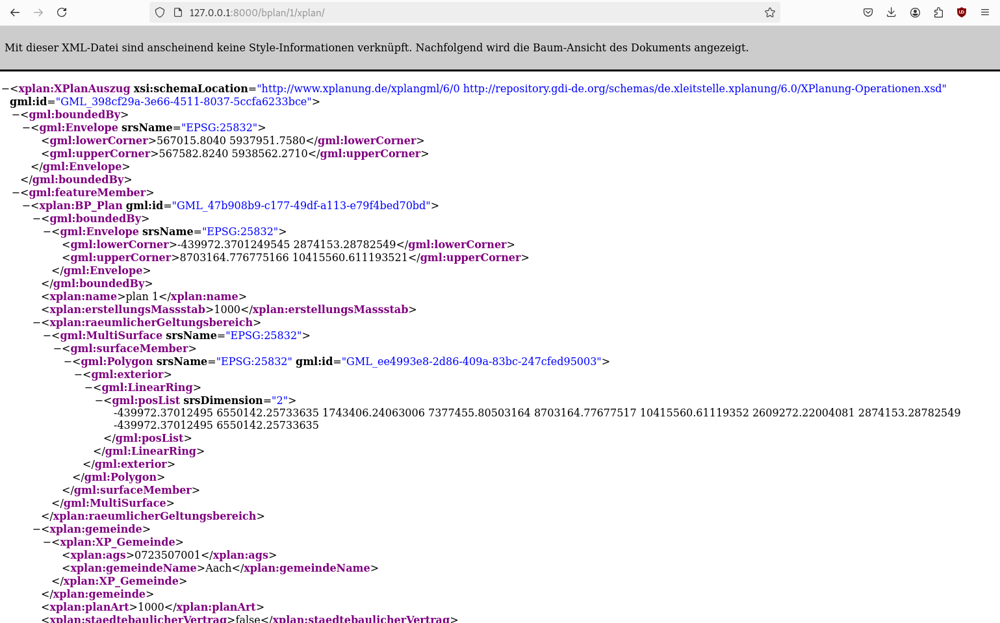Bei der Liste der Bebauungspläne macht es Sinn sich die Lage der Pläne auch auf einer dynamischen Übersichtskarte anzeigen zu lassen. Hierzu kann django-leaflet genutzt werden. Im ersten Schritt muss man aber die Geodaten mit in den View übernehmen. Theoretisch wäre es ausreichend das Geometrie Feld geltungsbereich zu nutzen. Wenn man aber etwas Interaktion haben will, z.B. eine Selektierbarkeit einzelner Objekte im Viewer, dann ist es besser, ein gesamtes Geometrieobjekt mit ausgewählten Attributen zu verwenden. Hierzu überschreiben wir den die get_context_data Funktion der ListView um eine Serialisierung der Geoemtrien der aktuellen Seite und nennen sie markers
xplanung_light/views.py
from django.core.serializers import serialize
import json
# ...
class BPlanListView(SingleTableView):
# ...
def get_context_data(self, **kwargs):
context = super().get_context_data(**kwargs)
context["markers"] = json.loads(
serialize("geojson", context['table'].page.object_list.data, geometry_field='geltungsbereich')
)
return context
komserv2/settings.py
# ...
SERIALIZATION_MODULES = {
"geojson": "django.contrib.gis.serializers.geojson",
}
# ...
Die Marker wollen wir in einem LeafletViewer darstellen. Hierzu müssen wir das Template bearbeiten. Aber zunächst brauchen wir noch die js-lib turf , die geometrische Operationen zur Verfügung stellt.
komserv/xplanung_light/templates/layout.html
<!-- ... -->
<head>
<!-- ... -->
<script src="https://cdn.jsdelivr.net/npm/@turf/turf@7/turf.min.js"></script>
<!-- ... -->
</head>
<!-- ... -->
komserv/xplanung_light/templates/xplanung_light/bplan_list.html
{% extends "xplanung_light/layout.html" %}
{% load leaflet_tags %}
{% block title %}
Liste der Bebauungspläne
{% endblock %}
{% load render_table from django_tables2 %}
{% block content %}
{{ markers|json_script:"markers-data" }}
<script>
<!-- javascript-Part - siehe nächster Abschnitt -->
</script>
{% leaflet_map "bplan_list_map" callback="window.map_init_basic" %}
<p><a href="{% url 'bplan-create' %}">BPlan anlegen</a></p>
{% render_table table %}
<p>Anzahl: {{ object_list.count }}</p>
{% endblock %}
In dem Javascript für den Leaflet-Client steckt jetzt etwas mehr Logik.
Die marker werden in die das HTML-Element mit der id markers-data übetragen
Leaflet parsed das Json und baut daraus features
Die Features werden anhand von Attributen unterschiedlich gefärbt
Es gibt ein click-Event, dass die Polygone abfragt und ein PopUp erzeugt
Javascript im Script-Tag des templates komserv/xplanung_light/templates/xplanung_light/bplan_list.html
let mapGlobal = {};
function map_init_basic (map, options) {
mapGlobal = map;
//https://stackoverflow.com/questions/43007019/leaflet-event-how-to-propagate-to-overlapping-layers
const data = document.getElementById("markers-data");
const markers = JSON.parse(data.textContent);
map.setZoom(14);
let feature = L.geoJSON(markers, {
style: function(feature) {
switch (feature.properties.planart) {
case '1000': return {color: "#ff0000"};
case '10000': return {color: "#0000ff"};
}
}//,
//onEachFeature: onEachFeature
//zoomToBounds: zoomToBounds
}
)
/*.bindPopup(function (layer) {
return layer
.feature.properties.generic_id;
})*/
.addTo(map);
map.fitBounds(feature.getBounds());
/*
map.on('moveend', function() {
const bbox_field = document.getElementById("id_bbox");
//bbox_field.value = "test";
//alert(JSON.stringify(map.getBounds()));
const bounds = map.getBounds();
bbox_field.value = bounds._southWest.lng + "," + bounds._southWest.lat + "," + bounds._northEast.lng + "," + bounds._northEast.lat;
});
*/
/*function onEachFeature(feature, layer) {
layer.on({
click: zoomToFeature
});
//featureByName[feature.properties.name] = layer;
}*/
/*
function zoomToBounds(bounds) {
alert(JSON.stringify(bounds));
//featureByName[feature.properties.name] = layer;
}
*/
/*
function zoomToFeature(e) {
map.fitBounds(e.target.getBounds());
}
*/
var popup = L.popup()
map.on('click', e => {
//var thisMap = map;
const { lat, lng } = e.latlng;
const point = turf.point([lng, lat]);
const polygonsClicked = [];
//console.log(map._layers)
for (var id in map._layers) {
const layer = map._layers[id]
if (typeof layer.feature !== "undefined"){
//map._layers.forEach((p, i) => {
//const polygon= p.toGeoJSON();
const polygon = layer.feature;
//console.log(polygon)
//console.log(point)
if (turf.booleanPointInPolygon(point, polygon)) polygonsClicked.push(layer);
}
}
if (polygonsClicked.length > 0) {
popupContent = "Dokument(e):<br>";
for (var id in polygonsClicked) {
//console.log(polygonsClicked[id]);
bounds = polygonsClicked[id].getBounds();
//console.log(bounds);
popupContent += "<a onclick='mapGlobal.fitBounds([[" + bounds._southWest.lat + ", " + bounds._southWest.lng + "], [" + bounds._northEast.lat + ", " + bounds._northEast.lng + "]]);'>+</a> ";
popupContent += "<b>" + polygonsClicked[id].feature.properties.title + "</b> (" + polygonsClicked[id].feature.properties.date_of_document + ") - " + polygonsClicked[id].feature.properties.description + '<br>';
popupContent += "<a href='../" + polygonsClicked[id].feature.properties.pk + "/pdf/' target='_blank'>Download: " + polygonsClicked[id].feature.properties.pk + " (" + polygonsClicked[id].feature.properties.document_class + ")" + "</a><br>";
}
popup
.setLatLng(e.latlng)
.setContent(popupContent)
.openOn(map);
} else {
/*
popup
.setLatLng(e.latlng)
.setContent("You clicked the map at " + e.latlng.toString())
.openOn(map);
*/
}
});
}
Anpassung der Höhe im css-File
komserv/xplanung_light/static/xplanung_light/site.css
#bplan_list_map { height: 180px; }
python3 -m pip install django-filter
komserv/settings.py
# ...
INSTALLED_APPS = [
# ...
'django_filters',
# ...
]
# ...
komserv/xplanung_light/filter.py
from django_filters import FilterSet, CharFilter, ModelChoiceFilter
from .models import BPlan, AdministrativeOrganization
from django.contrib.gis.geos import Polygon
from django.db.models import Q
def bbox_filter(queryset, value):
#print("value from bbox_filter: " + value)
# extract bbox from cs numerical values
geom = Polygon.from_bbox(value.split(','))
#print(geom)
# 7.51461,50.31417,7.51563,50.31544
return queryset.filter(geltungsbereich__bboverlaps=geom)
# https://stackoverflow.com/questions/68592837/custom-filter-with-django-filters
class BPlanFilter(FilterSet):
name = CharFilter(lookup_expr='icontains')
bbox = CharFilter(method='bbox_filter', label='BBOX')
gemeinde = ModelChoiceFilter(queryset=AdministrativeOrganization.objects.only("pk", "name", "type"))
class Meta:
model = BPlan
fields = ["name", "gemeinde", "planart", "bbox"]
def bbox_filter(self, queryset, name, value):
#print("name from DocumentFilter.bbox_filter: " + name)
return bbox_filter(queryset, value)
Import der Klassen
Erben von FilterView
neues Attribut filterset_class
fixe Definition des templates - sonst sucht django nach bplan_filter.html - und das existiert nicht
Überschreiben von get_queryset
komserv/xplanung_light/views.py
# ...
from .filter import BPlanFilter
from django_filters.views import FilterView
# ...
class BPlanListView(FilterView, SingleTableView):
model = BPlan
table_class = BPlanTable
template_name = 'xplanung_light/bplan_list.html'
success_url = reverse_lazy("bplan-list")
filterset_class = BPlanFilter
def get_context_data(self, **kwargs):
context = super().get_context_data(**kwargs)
context["markers"] = json.loads(
serialize("geojson", context['table'].page.object_list.data, geometry_field='geltungsbereich')
)
return context
def get_queryset(self):
qs = super().get_queryset()
self.filter_set = BPlanFilter(self.request.GET, queryset=qs)
return self.filter_set.qs
# ...
templates/xplanung_light/bplan_list.html
<!-- ... -->
{% leaflet_map "bplan_list_map" callback="window.map_init_basic" %}
Filter
<!-- add boostrap form css - if wished -->
{% load django_bootstrap5 %}
<form method="get" action="">
{{ filter.form.as_p }}
<input type="submit" /><a href="{% url 'bplan-list' %}">Filter löschen</a>.</p>
</form>
<p><a href="{% url 'bplan-create' %}">BPlan anlegen</a></p>
<!-- ... -->
Wir haben innerhalb kürzester Zeit eine sehr einfache Verwaltungssoftware für Bebauungspläne erstellt. Die exportierbaren GML-Dateien lassen sich mit Hilfe des Validators prüfen und sind valide. Einen praktischen Nutzwert hat die Software in diesem Stadium aber noch nicht.
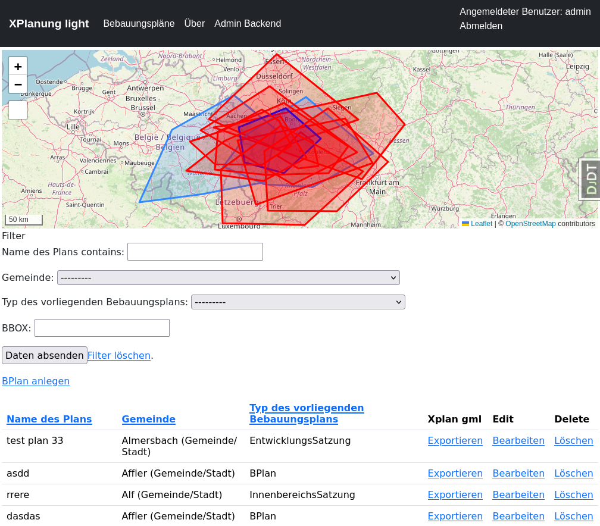Um zeigen zu können, wie schnell man das System anpassen kann, werden wir schnell noch ISO19193-konforme Metadaten generieren.
Den View für XPlan GML können wir einfach beibehalten und später etwas anpassen ;-)
komserv2/xplanung_light/urls.py
urlpatterns = [
# ...
# iso metadata generator for each bplan
path("bplan/<int:pk>/iso19139/", BPlanDetailXmlRasterView.as_view(template_name="xplanung_light/bplan_template_iso19139.xml"), name="bplan-export-iso19139"),
]
Wir brauchen die Geometrien jetzt auch im EPSG:4326 - dazu schreiben wir auch eine kleine Funktion zum Qualifizieren des GMLs aus der DB.
komserv2/xplanung_light/views.py
# ...
from django.urls import reverse_lazy, reverse
# ...
def qualify_gml_geometry(gml_from_db:str):
ET.register_namespace('gml','http://www.opengis.net/gml/3.2')
root = ET.fromstring("<?xml version='1.0' encoding='UTF-8'?><snippet xmlns:gml='http://www.opengis.net/gml/3.2'>" + gml_from_db + "</snippet>")
ns = {
'gml': 'http://www.opengis.net/gml/3.2',
}
# print("<?xml version='1.0' encoding='UTF-8'?><snippet xmlns:gml='http://www.opengis.net/gml/3.2'>" + context['bplan'].geltungsbereich_gml_25832 + "</snippet>")
# Test ob ein Polygon zurück kommt - damit wäre nur ein einziges Polygon im geometry Field
polygons = root.findall('gml:Polygon', ns)
# print(len(polygons))
if len(polygons) == 0:
# print("Kein Polygon auf oberer Ebene gefunden - es sind wahrscheinlich mehrere!")
multi_polygon_element = root.find('gml:MultiSurface', ns)
uuid_multisurface = uuid.uuid4()
multi_polygon_element.set("gml:id", "GML_" + str(uuid_multisurface))
# Füge gml_id Attribute hinzu - besser diese als Hash aus den Geometrien zu rechnen, oder in Zukunft generic_ids der Bereiche zu verwenden
polygons = root.findall('gml:MultiSurface/gml:surfaceMember/gml:Polygon', ns)
for polygon in polygons:
uuid_polygon = uuid.uuid4()
polygon.set("gml:id", "GML_" + str(uuid_polygon))
return ET.tostring(multi_polygon_element, encoding="utf-8", method="xml").decode('utf8')
else:
polygon_element = root.find('gml:Polygon', ns)
#polygon_element.set("xmlns:gml", "http://www.opengis.net/gml/3.2")
uuid_polygon = uuid.uuid4()
polygon_element.set("gml:id", "GML_" + str(uuid_polygon))
# Ausgabe der Geometrie in ein XML-Snippet - erweitert um den MultiSurface/surfaceMember Rahmen
ET.dump(polygon_element)
return '<gml:MultiSurface srsName="EPSG:25832"><gml:surfaceMember>' + ET.tostring(polygon_element, encoding="utf-8", method="xml").decode('utf8') + '</gml:surfaceMember></gml:MultiSurface>'
# ...
class BPlanDetailXmlRasterView(BPlanDetailView):
def get_queryset(self):
# Erweiterung der auszulesenden Objekte um eine transformierte Geomtrie im Format GML 3
queryset = super().get_queryset().annotate(geltungsbereich_gml_25832=AsGML(Transform("geltungsbereich", 25832), version=3)).annotate(geltungsbereich_gml_4326=AsGML("geltungsbereich", version=3))
return queryset
def get_context_data(self, **kwargs):
context = super().get_context_data(**kwargs)
# Um einen XPlanung-konformen Auszug zu bekommen, werden gml_id(s) verwendet.
# Es handelt sich um uuids, die noch das Prefix "GML_" bekommen. Grundsätzlich sollten die
# aus den Daten in der DB stammen und dort vergeben werden.
# Im ersten Schritt synthetisieren wir sie einfach ;-)
context['auszug_uuid'] = "GML_" + str(uuid.uuid4())
context['bplan_uuid'] = "GML_" + str(uuid.uuid4())
# Irgendwie gibt es keine django model function um direkt den Extent der Geometrie zu erhalten. Daher nutzen wir hier gdal
# und Transformieren die Daten erneut im RAM
# Definition der Transformation (Daten sind immer in WGS 84 - 4326)
ct = CoordTransform(SpatialReference(4326, srs_type='epsg'), SpatialReference(25832, srs_type='epsg'))
# OGRGeoemtry Objekt erstellen
ogr_geom = OGRGeometry(str(context['bplan'].geltungsbereich), srs=4326)
context['wgs84_extent'] = ogr_geom.extent
# Transformation nach EPSG:25832
ogr_geom.transform(ct)
# Speichern des Extents in den Context
context['extent'] = ogr_geom.extent
# Ausgabe der GML Variante zu Testzwecken
# print(context['bplan'].geltungsbereich_gml_25832)
# Da die GML Daten nicht alle Attribute beinhalten, die XPlanung fordert, müssen wir sie anpassen, bzw. umschreiben
# Hierzu nutzen wir die Funktion qualify_gml_geometry
context['multisurface_geometry_25832'] = qualify_gml_geometry(context['bplan'].geltungsbereich_gml_25832)
context['multisurface_geometry_4326'] = qualify_gml_geometry(context['bplan'].geltungsbereich_gml_4326)
relative_url = reverse('bplan-export-xplan-raster-6', kwargs={'pk': context['bplan'].id})
context['iso19139_url']= self.request.build_absolute_uri(relative_url)
return context
def dispatch(self, *args, **kwargs):
response = super().dispatch(*args, **kwargs)
response['Content-type'] = "application/xml" # set header
return response
# ...
komserv2/xplanung_light/templates/xplanung_light/bplan_template_iso19139.xml
<?xml version="1.0" encoding="UTF-8"?>
<gmd:MD_Metadata xmlns:gmd="http://www.isotc211.org/2005/gmd" xmlns:gmx="http://www.isotc211.org/2005/gmx" xmlns:gco="http://www.isotc211.org/2005/gco" xmlns:xsi="http://www.w3.org/2001/XMLSchema-instance" xmlns:gml="http://www.opengis.net/gml" xmlns:xlink="http://www.w3.org/1999/xlink" xsi:schemaLocation="http://www.isotc211.org/2005/gmd http://schemas.opengis.net/iso/19139/20060504/gmd/gmd.xsd">
<gmd:fileIdentifier>
<gco:CharacterString>{{ bplan.generic_id }}</gco:CharacterString>
</gmd:fileIdentifier>
<gmd:language>
<gmd:LanguageCode codeList="http://www.loc.gov/standards/iso639-2" codeListValue="ger">Deutsch</gmd:LanguageCode>
</gmd:language>
<gmd:characterSet>
<gmd:MD_CharacterSetCode codeList="http://standards.iso.org/ittf/PubliclyAvailableStandards/ISO_19139_Schemas/resources/codelist/ML_gmxCodelists.xml#MD_CharacterSetCode" codeListValue="utf8"/>
</gmd:characterSet>
<gmd:hierarchyLevel>
<gmd:MD_ScopeCode codeList="http://standards.iso.org/ittf/PubliclyAvailableStandards/ISO_19139_Schemas/resources/codelist/ML_gmxCodelists.xml#MD_ScopeCode" codeListValue="dataset">dataset</gmd:MD_ScopeCode>
</gmd:hierarchyLevel>
<gmd:contact>
<gmd:CI_ResponsibleParty>
<gmd:organisationName>
<gco:CharacterString>{{ bplan.gemeinde.name }}</gco:CharacterString>
</gmd:organisationName>
<gmd:contactInfo>
<gmd:CI_Contact>
<gmd:address>
<gmd:CI_Address>
<gmd:administrativeArea>
<gco:CharacterString>Rheinland-Pfalz</gco:CharacterString>
</gmd:administrativeArea>
<gmd:country>
<gco:CharacterString>DE</gco:CharacterString>
</gmd:country>
<gmd:electronicMailAddress>
<gco:CharacterString>{{ bplan.gemeinde.address_email }}</gco:CharacterString>
</gmd:electronicMailAddress>
</gmd:CI_Address>
</gmd:address>
</gmd:CI_Contact>
</gmd:contactInfo>
<gmd:role>
<gmd:CI_RoleCode codeList="http://standards.iso.org/ittf/PubliclyAvailableStandards/ISO_19139_Schemas/resources/codelist/ML_gmxCodelists.xml#CI_RoleCode" codeListValue="pointOfContact">pointOfContact</gmd:CI_RoleCode>
</gmd:role>
</gmd:CI_ResponsibleParty>
</gmd:contact>
<gmd:dateStamp>
{% if bplan.history.date %}
<gco:Date>{{ bplan.history.date }}</gco:Date>
{% else %}
<gco:Date>2025-05-07</gco:Date>
{% endif %}
</gmd:dateStamp>
<gmd:metadataStandardName>
<gco:CharacterString>ISO19115</gco:CharacterString>
</gmd:metadataStandardName>
<gmd:metadataStandardVersion>
<gco:CharacterString>2003/Cor.1:2006</gco:CharacterString>
</gmd:metadataStandardVersion>
<gmd:referenceSystemInfo>
<gmd:MD_ReferenceSystem>
<gmd:referenceSystemIdentifier>
<gmd:RS_Identifier>
<gmd:authority>
<gmd:CI_Citation>
<gmd:title>
<gco:CharacterString>European Petroleum Survey Group (EPSG) Geodetic Parameter Registry</gco:CharacterString>
</gmd:title>
<gmd:date>
<gmd:CI_Date>
<gmd:date>
<gco:Date>2008-11-12</gco:Date>
</gmd:date>
<gmd:dateType>
<gmd:CI_DateTypeCode codeList="http://www.isotc211.org/2005/resources/codelist/gmxCodelists.xml#CI_DateTypeCode" codeListValue="publication">publication</gmd:CI_DateTypeCode>
</gmd:dateType>
</gmd:CI_Date>
</gmd:date>
<gmd:citedResponsibleParty>
<gmd:CI_ResponsibleParty>
<gmd:organisationName>
<gco:CharacterString>European Petroleum Survey Group</gco:CharacterString>
</gmd:organisationName>
<gmd:contactInfo>
<gmd:CI_Contact>
<gmd:onlineResource>
<gmd:CI_OnlineResource>
<gmd:linkage>
<gmd:URL>http://www.epsg-registry.org/</gmd:URL>
</gmd:linkage>
</gmd:CI_OnlineResource>
</gmd:onlineResource>
</gmd:CI_Contact>
</gmd:contactInfo>
<gmd:role gco:nilReason="missing"/>
</gmd:CI_ResponsibleParty>
</gmd:citedResponsibleParty>
</gmd:CI_Citation>
</gmd:authority>
<gmd:code>
<gco:CharacterString>http://www.opengis.net/def/crs/EPSG/0/4326</gco:CharacterString>
</gmd:code>
<gmd:version>
<gco:CharacterString>6.18.3</gco:CharacterString>
</gmd:version>
</gmd:RS_Identifier>
</gmd:referenceSystemIdentifier>
</gmd:MD_ReferenceSystem>
</gmd:referenceSystemInfo>
<gmd:identificationInfo>
<gmd:MD_DataIdentification>
<gmd:citation>
<gmd:CI_Citation>
<gmd:title>
<gco:CharacterString>Bebauungsplan {{ bplan.name }} von {{ bplan.gemeinde.name }}</gco:CharacterString>
</gmd:title>
<gmd:date>
<gmd:CI_Date>
<gmd:date>
{% if bplan.history.date %}
<gco:Date>{{ bplan.history.date }}</gco:Date>
{% else %}
<gco:Date>2025-05-07</gco:Date>
{% endif %}
</gmd:date>
<gmd:dateType>
<gmd:CI_DateTypeCode codeList="http://standards.iso.org/ittf/PubliclyAvailableStandards/ISO_19139_Schemas/resources/codelist/ML_gmxCodelists.xml#CI_DateTypeCode" codeListValue="revision">revision</gmd:CI_DateTypeCode>
</gmd:dateType>
</gmd:CI_Date>
</gmd:date>
<gmd:identifier>
<gmd:MD_Identifier>
<gmd:code>
<gco:CharacterString>https://komserv4gdi.service24.rlp.de/{{ bplan.generic_id }}</gco:CharacterString>
</gmd:code>
</gmd:MD_Identifier>
</gmd:identifier>
</gmd:CI_Citation>
</gmd:citation>
<gmd:abstract>
<gco:CharacterString>Bebauungsplan {{ bplan.name }} von {{ bplan.gemeinde.name }}</gco:CharacterString>
</gmd:abstract>
<gmd:pointOfContact>
<gmd:CI_ResponsibleParty>
<gmd:organisationName>
<gco:CharacterString>{{ bplan.gemeinde.address_street }}</gco:CharacterString>
</gmd:organisationName>
<gmd:contactInfo>
<gmd:CI_Contact>
<gmd:address>
<gmd:CI_Address>
<gmd:administrativeArea>
<gco:CharacterString>Rheinland-Pfalz</gco:CharacterString>
</gmd:administrativeArea>
<gmd:country>
<gco:CharacterString>DE</gco:CharacterString>
</gmd:country>
<gmd:electronicMailAddress>
<gco:CharacterString>{{ bplan.gemeinde.address_email }}</gco:CharacterString>
</gmd:electronicMailAddress>
</gmd:CI_Address>
</gmd:address>
</gmd:CI_Contact>
</gmd:contactInfo>
<gmd:role>
<gmd:CI_RoleCode codeList="http://standards.iso.org/ittf/PubliclyAvailableStandards/ISO_19139_Schemas/resources/codelist/ML_gmxCodelists.xml#CI_RoleCode" codeListValue="publisher">publisher</gmd:CI_RoleCode>
</gmd:role>
</gmd:CI_ResponsibleParty>
</gmd:pointOfContact>
<gmd:resourceMaintenance>
<gmd:MD_MaintenanceInformation>
<gmd:maintenanceAndUpdateFrequency>
<gmd:MD_MaintenanceFrequencyCode codeListValue="irregular" codeList="http://www.isotc211.org/2005/resources/codeList.xml#MD_MaintenanceFrequencyCode"/>
</gmd:maintenanceAndUpdateFrequency>
</gmd:MD_MaintenanceInformation>
</gmd:resourceMaintenance>
<gmd:descriptiveKeywords>
<gmd:MD_Keywords>
<gmd:keyword>
<gco:CharacterString>Regional</gco:CharacterString>
</gmd:keyword>
<gmd:thesaurusName>
<gmd:CI_Citation>
<gmd:title>
<gco:CharacterString>Spatial scope</gco:CharacterString>
</gmd:title>
<gmd:date>
<gmd:CI_Date>
<gmd:date>
<gco:Date>2019-05-22</gco:Date>
</gmd:date>
<gmd:dateType>
<gmd:CI_DateTypeCode codeList="http://standards.iso.org/ittf/PubliclyAvailableStandards/ISO_19139_Schemas/resources/codelist/ML_gmxCodelists.xml#CI_DateTypeCode" codeListValue="publication">publication</gmd:CI_DateTypeCode>
</gmd:dateType>
</gmd:CI_Date>
</gmd:date>
</gmd:CI_Citation>
</gmd:thesaurusName>
</gmd:MD_Keywords>
</gmd:descriptiveKeywords>
<gmd:resourceConstraints>
<!-- TODO: pull license information from user defined license information -->
<gmd:MD_LegalConstraints>
<gmd:accessConstraints>
<gmd:MD_RestrictionCode codeList="http://standards.iso.org/iso/19139/resources/gmxCodelists.xml#MD_RestrictionCode" codeListValue="otherRestrictions"/>
</gmd:accessConstraints>
<gmd:otherConstraints>
<gmx:Anchor xlink:href="http://inspire.ec.europa.eu/metadata-codelist/LimitationsOnPublicAccess/noLimitations">Es gelten keine Zugriffsbeschränkungen</gmx:Anchor>
</gmd:otherConstraints>
</gmd:MD_LegalConstraints>
</gmd:resourceConstraints>
<gmd:resourceConstraints>
<gmd:MD_LegalConstraints>
<gmd:useConstraints>
<gmd:MD_RestrictionCode codeList="http://standards.iso.org/iso/19139/resources/gmxCodelists.xml#MD_RestrictionCode" codeListValue="otherRestrictions"/>
</gmd:useConstraints>
<gmd:otherConstraints>
<gco:CharacterString>
Lizenz: cc-by-3.0 - Creative Commons: Namensnennung 3.0 Deutschland - http://creativecommons.org/licenses/by/3.0/de/ - Quellenvermerk: Source note required by license, but not given!
</gco:CharacterString>
</gmd:otherConstraints>
<gmd:otherConstraints>
<gco:CharacterString>
{"id":"cc-by-3.0","name":"Creative Commons: Namensnennung 3.0 Deutschland","url":"http:\/\/creativecommons.org\/licenses\/by\/3.0\/de\/","quelle":"Source note required by license, but not given!"}
</gco:CharacterString>
</gmd:otherConstraints>
</gmd:MD_LegalConstraints>
</gmd:resourceConstraints>
<gmd:spatialRepresentationType>
<gmd:MD_SpatialRepresentationTypeCode codeList="https://standards.iso.org/iso/19139/resources/gmxCodelists.xml#MD_SpatialRepresentationTypeCode" codeListValue="vector">vector</gmd:MD_SpatialRepresentationTypeCode>
</gmd:spatialRepresentationType>
<gmd:spatialResolution>
<gmd:MD_Resolution>
<gmd:equivalentScale>
<gmd:MD_RepresentativeFraction>
<gmd:denominator>
<gco:Integer>1000</gco:Integer>
</gmd:denominator>
</gmd:MD_RepresentativeFraction>
</gmd:equivalentScale>
</gmd:MD_Resolution>
</gmd:spatialResolution>
<gmd:language>
<gmd:LanguageCode codeListValue="ger" codeList="http://www.loc.gov/standards/iso639-2">Deutsch</gmd:LanguageCode>
</gmd:language>
<gmd:characterSet>
<gmd:MD_CharacterSetCode codeListValue="utf8" codeList="http://www.isotc211.org/2005/resources/codeList.xml#MD_CharacterSetCode"/>
</gmd:characterSet>
<gmd:topicCategory>
<gmd:MD_TopicCategoryCode>location</gmd:MD_TopicCategoryCode>
</gmd:topicCategory>
<gmd:extent>
<gmd:EX_Extent>
<gmd:geographicElement>
<gmd:EX_GeographicBoundingBox>
<gmd:westBoundLongitude>
<gco:Decimal>{{ wgs84_extent.0 }}</gco:Decimal>
</gmd:westBoundLongitude>
<gmd:eastBoundLongitude>
<gco:Decimal>{{ wgs84_extent.1 }}</gco:Decimal>
</gmd:eastBoundLongitude>
<gmd:southBoundLatitude>
<gco:Decimal>{{ wgs84_extent.2 }}</gco:Decimal>
</gmd:southBoundLatitude>
<gmd:northBoundLatitude>
<gco:Decimal>{{ wgs84_extent.3 }}</gco:Decimal>
</gmd:northBoundLatitude>
</gmd:EX_GeographicBoundingBox>
</gmd:geographicElement>
</gmd:EX_Extent>
</gmd:extent>
{% if multisurface_geometry_4326 %}
<gmd:extent>
<gmd:EX_Extent>
<gmd:geographicElement>
<gmd:EX_BoundingPolygon>
<gmd:polygon>
{% autoescape off %}
{{ multisurface_geometry_4326 }}
{% endautoescape %}
</gmd:polygon>
</gmd:EX_BoundingPolygon>
</gmd:geographicElement>
</gmd:EX_Extent>
</gmd:extent>
{% endif %}
<!--<gmd:extent>
<gmd:EX_Extent>
<gmd:temporalElement>
<gmd:EX_TemporalExtent>
<gmd:extent>
<gml:TimePeriod gml:id="temporalextent">
<gml:beginPosition>2024-11-08</gml:beginPosition>
<gml:endPosition>2024-11-09</gml:endPosition>
</gml:TimePeriod>
</gmd:extent>
</gmd:EX_TemporalExtent>
</gmd:temporalElement>
</gmd:EX_Extent>
</gmd:extent>-->
</gmd:MD_DataIdentification>
</gmd:identificationInfo>
<gmd:distributionInfo>
<gmd:MD_Distribution>
<gmd:distributionFormat>
<gmd:MD_Format>
<gmd:name>
<gco:CharacterString>GML</gco:CharacterString>
</gmd:name>
<gmd:version>
<gco:CharacterString>3.2</gco:CharacterString>
</gmd:version>
</gmd:MD_Format>
</gmd:distributionFormat>
<gmd:distributor>
<gmd:MD_Distributor>
<gmd:distributorContact>
<gmd:CI_ResponsibleParty>
<gmd:organisationName>
{% if responsible_party_address %}
<gco:CharacterString>{{ responsible_party_address }}</gco:CharacterString>
{% else %}
<gco:CharacterString>Musterstraße 10</gco:CharacterString>
{% endif %}
</gmd:organisationName>
<gmd:contactInfo>
<gmd:CI_Contact>
<gmd:address>
<gmd:CI_Address>
<gmd:administrativeArea>
<gco:CharacterString>Rheinland-Pfalz</gco:CharacterString>
</gmd:administrativeArea>
<gmd:country>
<gco:CharacterString>DE</gco:CharacterString>
</gmd:country>
<gmd:electronicMailAddress>
{% if responsible_party_email %}
<gco:CharacterString>{{ responsible_party_email }}</gco:CharacterString>
{% else %}
<gco:CharacterString>test@example.com</gco:CharacterString>
{% endif %}
</gmd:electronicMailAddress>
</gmd:CI_Address>
</gmd:address>
</gmd:CI_Contact>
</gmd:contactInfo>
<gmd:role>
<gmd:CI_RoleCode codeList="http://standards.iso.org/ittf/PubliclyAvailableStandards/ISO_19139_Schemas/resources/codelist/ML_gmxCodelists.xml#CI_RoleCode" codeListValue="pointOfContact">pointOfContact</gmd:CI_RoleCode>
</gmd:role>
</gmd:CI_ResponsibleParty>
</gmd:distributorContact>
</gmd:MD_Distributor>
</gmd:distributor>
<gmd:transferOptions>
<gmd:MD_DigitalTransferOptions>
<gmd:onLine>
<gmd:CI_OnlineResource>
<gmd:linkage>
<gmd:URL>{{ iso19139_url }}</gmd:URL>
</gmd:linkage>
<gmd:function>
<gmd:CI_OnLineFunctionCode codeList="http://www.isotc211.org/2005/resources/Codelist/gmxCodelists.xml" codeListValue="download">download</gmd:CI_OnLineFunctionCode>
</gmd:function>
</gmd:CI_OnlineResource>
</gmd:onLine>
</gmd:MD_DigitalTransferOptions>
</gmd:transferOptions>
</gmd:MD_Distribution>
</gmd:distributionInfo>
<gmd:dataQualityInfo>
<!-- Fix -->
<gmd:DQ_DataQuality>
<gmd:scope>
<gmd:DQ_Scope>
<gmd:level>
<gmd:MD_ScopeCode codeList="http://standards.iso.org/ittf/PubliclyAvailableStandards/ISO_19139_Schemas/resources/codelist/ML_gmxCodelists.xml#MD_ScopeCode" codeListValue="dataset">dataset</gmd:MD_ScopeCode>
</gmd:level>
</gmd:DQ_Scope>
</gmd:scope>
<gmd:report xmlns:gmd="http://www.isotc211.org/2005/gmd" xmlns:xsi="http://www.w3.org/2001/XMLSchema-instance" xmlns:gco="http://www.isotc211.org/2005/gco">
<gmd:DQ_DomainConsistency xsi:type="gmd:DQ_DomainConsistency_Type">
<gmd:result>
<gmd:DQ_ConformanceResult xsi:type="gmd:DQ_ConformanceResult_Type">
<gmd:specification>
<gmd:CI_Citation>
<gmd:title>
<gco:CharacterString>VERORDNUNG (EG) Nr. 1205/2008 DER KOMMISSION vom 3. Dezember 2008 zur Durchführung der Richtlinie 2007/2/EG des Europäischen Parlaments und des Rates hinsichtlich Metadaten</gco:CharacterString>
</gmd:title>
<gmd:date>
<gmd:CI_Date>
<gmd:date>
<gco:Date>2008-12-04</gco:Date>
</gmd:date>
<gmd:dateType>
<gmd:CI_DateTypeCode codeList="http://standards.iso.org/ittf/PubliclyAvailableStandards/ISO_19139_Schemas/resources/Codelist/ML_gmxCodelists.xml#CI_DateTypeCode" codeListValue="publication">publication</gmd:CI_DateTypeCode>
</gmd:dateType>
</gmd:CI_Date>
</gmd:date>
<gmd:edition>
<gco:CharacterString>1.0</gco:CharacterString>
</gmd:edition>
</gmd:CI_Citation>
</gmd:specification>
<gmd:explanation>
<gco:CharacterString>No explanation available</gco:CharacterString>
</gmd:explanation>
<gmd:pass>
<gco:Boolean>true</gco:Boolean>
</gmd:pass>
</gmd:DQ_ConformanceResult>
</gmd:result>
</gmd:DQ_DomainConsistency>
</gmd:report>
<gmd:report xmlns:gmd="http://www.isotc211.org/2005/gmd" xmlns:xsi="http://www.w3.org/2001/XMLSchema-instance" xmlns:gco="http://www.isotc211.org/2005/gco">
<gmd:DQ_DomainConsistency xsi:type="gmd:DQ_DomainConsistency_Type">
<gmd:result>
<gmd:DQ_ConformanceResult xsi:type="gmd:DQ_ConformanceResult_Type">
<gmd:specification>
<gmd:CI_Citation>
<gmd:title>
<gco:CharacterString>VERORDNUNG (EU) Nr. 1253/2013 DER KOMMISSION vom 21. Oktober 2013 zur Änderung der Verordnung (EU) Nr. 1089/2010 zur Durchführung der Richtlinie 2007/2/EG hinsichtlich der Interoperabilität von Geodatensätzen und -diensten</gco:CharacterString>
</gmd:title>
<gmd:date>
<gmd:CI_Date>
<gmd:date>
<gco:Date>2013-12-10</gco:Date>
</gmd:date>
<gmd:dateType>
<gmd:CI_DateTypeCode codeList="http://standards.iso.org/ittf/PubliclyAvailableStandards/ISO_19139_Schemas/resources/Codelist/ML_gmxCodelists.xml#CI_DateTypeCode" codeListValue="publication">publication</gmd:CI_DateTypeCode>
</gmd:dateType>
</gmd:CI_Date>
</gmd:date>
<gmd:edition>
<gco:CharacterString>1.0</gco:CharacterString>
</gmd:edition>
</gmd:CI_Citation>
</gmd:specification>
<gmd:explanation>
<gco:CharacterString>No explanation available</gco:CharacterString>
</gmd:explanation>
<gmd:pass>
<gco:Boolean>false</gco:Boolean>
</gmd:pass>
</gmd:DQ_ConformanceResult>
</gmd:result>
</gmd:DQ_DomainConsistency>
</gmd:report>
<gmd:report xmlns:gmd="http://www.isotc211.org/2005/gmd" xmlns:xsi="http://www.w3.org/2001/XMLSchema-instance" xmlns:gco="http://www.isotc211.org/2005/gco">
<gmd:DQ_DomainConsistency xsi:type="gmd:DQ_DomainConsistency_Type">
<gmd:result>
<gmd:DQ_ConformanceResult xsi:type="gmd:DQ_ConformanceResult_Type">
<gmd:specification>
<gmd:CI_Citation>
<gmd:title>
<gco:CharacterString>VERORDNUNG (EU) Nr. 102/2011 DER KOMMISSION vom 4. Februar 2011 zur Änderung der Verordnung (EU) Nr. 1089/2010 zur Durchführung der Richtlinie 2007/2/EG des Europäischen Parlaments und des Rates hinsichtlich der Interoperabilität von Geodatensätzen und -diensten</gco:CharacterString>
</gmd:title>
<gmd:date>
<gmd:CI_Date>
<gmd:date>
<gco:Date>2011-02-05</gco:Date>
</gmd:date>
<gmd:dateType>
<gmd:CI_DateTypeCode codeList="http://standards.iso.org/ittf/PubliclyAvailableStandards/ISO_19139_Schemas/resources/Codelist/ML_gmxCodelists.xml#CI_DateTypeCode" codeListValue="publication">publication</gmd:CI_DateTypeCode>
</gmd:dateType>
</gmd:CI_Date>
</gmd:date>
<gmd:edition>
<gco:CharacterString>1.0</gco:CharacterString>
</gmd:edition>
</gmd:CI_Citation>
</gmd:specification>
<gmd:explanation>
<gco:CharacterString>No explanation available</gco:CharacterString>
</gmd:explanation>
<gmd:pass>
<gco:Boolean>false</gco:Boolean>
</gmd:pass>
</gmd:DQ_ConformanceResult>
</gmd:result>
</gmd:DQ_DomainConsistency>
</gmd:report>
<gmd:report xmlns:gmd="http://www.isotc211.org/2005/gmd" xmlns:xsi="http://www.w3.org/2001/XMLSchema-instance" xmlns:gco="http://www.isotc211.org/2005/gco">
<gmd:DQ_DomainConsistency xsi:type="gmd:DQ_DomainConsistency_Type">
<gmd:result>
<gmd:DQ_ConformanceResult xsi:type="gmd:DQ_ConformanceResult_Type">
<gmd:specification>
<gmd:CI_Citation>
<gmd:title>
<gco:CharacterString>VERORDNUNG (EG) Nr. 1089/2010 DER KOMMISSION vom 23. November 2010 zur Durchführung der Richtlinie 2007/2/EG des Europäischen Parlaments und des Rates hinsichtlich der Interoperabilität von Geodatensätzen und -diensten</gco:CharacterString>
</gmd:title>
<gmd:date>
<gmd:CI_Date>
<gmd:date>
<gco:Date>2010-12-08</gco:Date>
</gmd:date>
<gmd:dateType>
<gmd:CI_DateTypeCode codeList="http://standards.iso.org/ittf/PubliclyAvailableStandards/ISO_19139_Schemas/resources/Codelist/ML_gmxCodelists.xml#CI_DateTypeCode" codeListValue="publication">publication</gmd:CI_DateTypeCode>
</gmd:dateType>
</gmd:CI_Date>
</gmd:date>
<gmd:edition>
<gco:CharacterString>1.0</gco:CharacterString>
</gmd:edition>
</gmd:CI_Citation>
</gmd:specification>
<gmd:explanation>
<gco:CharacterString>No explanation available</gco:CharacterString>
</gmd:explanation>
<gmd:pass>
<gco:Boolean>false</gco:Boolean>
</gmd:pass>
</gmd:DQ_ConformanceResult>
</gmd:result>
</gmd:DQ_DomainConsistency>
</gmd:report>
<gmd:lineage>
<gmd:LI_Lineage>
<gmd:statement>
<gco:CharacterString>Geodaten basieren auf den generalisierten amtlichen Grenzen der Gebietskörperschaften.</gco:CharacterString>
</gmd:statement>
</gmd:LI_Lineage>
</gmd:lineage>
</gmd:DQ_DataQuality>
</gmd:dataQualityInfo>
</gmd:MD_Metadata>
komserv2/xplanung_light/tables.py
import django_tables2 as tables
from .models import BPlan
from django_tables2 import Column
from django_tables2.utils import A
class BPlanTable(tables.Table):
#download = tables.LinkColumn('gedis-document-pdf', text='Download', args=[A('pk')], \
# orderable=False, empty_values=())
xplan_gml = tables.LinkColumn('bplan-export-xplan-raster-6', text='Exportieren', args=[A('pk')], \
orderable=False, empty_values=())
iso_metadata = tables.LinkColumn('bplan-export-iso19139', text='Exportieren', args=[A('pk')], \
orderable=False, empty_values=())
edit = tables.LinkColumn('bplan-update', text='Bearbeiten', args=[A('pk')], \
orderable=False, empty_values=())
delete = tables.LinkColumn('bplan-delete', text='Löschen', args=[A('pk')], \
orderable=False, empty_values=())
"""
geojson = Column(
accessor=A('geojson'),
orderable=False,
# ...
)
"""
class Meta:
model = BPlan
template_name = "django_tables2/bootstrap5.html"
fields = ("name", "gemeinde", "planart", "xplan_gml", "iso_metadata", "edit", "delete")
Die Bebauungsplantabelle hat jetzt eine Spalte mit dem jeweiligen Link zu einem konformen ISO-19139 dataset Metadatensatz . Den können wir später verwenden um die Serverkomponenten damit anzureichen - GDI very easy ;-) .
http://127.0.0.1:8000/bplan/1/iso19139/
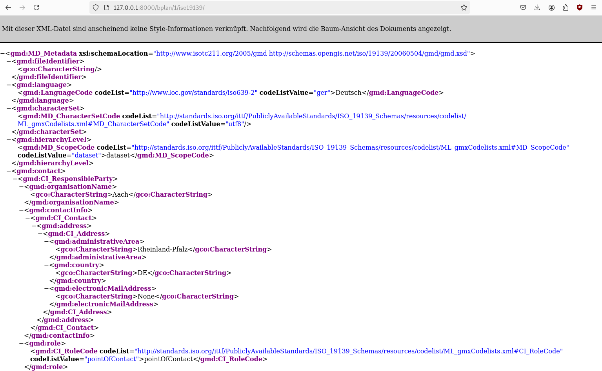Um die Software zur Produktionsreife zu bringen, müssen noch ein paar Dinge entwickelt werden.
Ersetzen des Felds geltungsbereich durch eine m2m Relation zu einem neuen Modell bereich
Aktivieren der Pflichtfelder entprechend der Vorgaben in RLP
Entwickeln notwendiger Validierungsfunktionen
Erstellung eines Mapfile-Generators zur Publikation von WMS- und WFS-Interfaces
Schaffung der Ablagemöglichkeit für Dokumente
Importmöglichkeit für BPlan-GML Dokumente
…
Bemerkung
Auf geht’s ;-) …
Wir nutzen ab hier crispy-forms um die Formulare zu optimieren.
Installation der packages
python3 -m pip install django-crispy-forms
python3 -m pip install crispy-bootstrap5
Aktivierung in komserv/settings.py
#...
INSTALLED_APPS = [
# ...
'crispy_forms',
'crispy_bootstrap5',
]
#...
CRISPY_ALLOWED_TEMPLATE_PACKS = "bootstrap5"
CRISPY_TEMPLATE_PACK = "bootstrap5"
#...
Für den Import von GML-Dateien bauen wir uns eine spezielles Formular. Dazu schreiben wir eine neue Form-Klasse. Die Klasse wird nicht von einem Model abgeleitet und hat einen eigenen Validator, der in der validators.py abgelegt ist. Der Validator prüft zunächst, ob es sich um eine unterstützte XPlan-GML-Datei handelt. Ausserdem werden die Plichtfelder gecheckt, sowie der AGS. Der muss einer im System vorhandenen Organisation zugeordnet werden können.
komserv2/xplanung_light/forms.py
# ...
from xplanung_light.validators import xplan_content_validator
# ...
from crispy_forms.helper import FormHelper
from crispy_forms.layout import Layout, Fieldset, Submit
# ...
class BPlanImportForm(forms.Form):
confirm = forms.BooleanField(label="Vorhandenen Plan überschreiben", initial=False, required=False)
file = forms.FileField(required=True, label="BPlan GML", validators=[xplan_content_validator])
"""
for crispy-forms
"""
def __init__(self, *args, **kwargs):
super(BPlanImportForm, self).__init__(*args, **kwargs)
self.helper = FormHelper()
self.helper.layout = Layout(Fieldset("Bebauungsplan importieren", "file", "confirm"), Submit("submit", "Hochladen"))
komserv2/xplanung_light/validators.py
from django import forms
import xml.etree.ElementTree as ET
from django.contrib.gis.geos import GEOSGeometry
from xplanung_light.models import AdministrativeOrganization
#https://www.tommygeorge.com/blog/validating-content-of-django-file-uploads/
"""
Funktion zur Validierung der zu importierenden XPlan-GML Datei.
Validierungen:
* Datei ist XML
* Namespace ist http://www.xplanung.de/xplangml/6/0 und Element ist XPlanAuszug
* XPlan-Pflichtfelder
* Spezielle Pflichtfelder
"""
def xplan_content_validator(xplan_file):
xml_string = xplan_file.read().decode('UTF-8')
validation_error_messages = []
try:
ET.register_namespace("gml", "http://www.opengis.net/gml/3.2")
root = ET.fromstring(xml_string)
root_element_name = root.tag.__str__()
supported_element_names = ["{http://www.xplanung.de/xplangml/6/0}XPlanAuszug", ]
if root_element_name not in supported_element_names:
validation_error_messages.append("XML-Dokument mit root-Element *" + root_element_name + "* wird nicht unterstützt!")
else:
# check Pflichtfelder
# check zusätzliche Pflichtfelder aus eigenem Standard - nummer, rechtsstand, ...
ns = {
'xplan': 'http://www.xplanung.de/xplangml/6/0',
'gml': 'http://www.opengis.net/gml/3.2',
'xlink': 'http://www.w3.org/1999/xlink',
'xsi': 'http://www.w3.org/2001/XMLSchema-instance',
'wfs': 'http://www.opengis.net/wfs',
'xsd': 'http://www.w3.org/2001/XMLSchema',
}
# check Pflichtfelder aus XPlannung Standard - name, geltungsbereich, gemeinde, planart
mandatory_fields = {
'name': {'xpath': 'gml:featureMember/xplan:BP_Plan/', 'type': 'text', 'xplan_element': 'xplan:name'},
'planart': {'xpath': 'gml:featureMember/xplan:BP_Plan/', 'type': 'text', 'xplan_element': 'xplan:planArt'},
'gemeinde_name': {'xpath': 'gml:featureMember/xplan:BP_Plan/xplan:gemeinde/xplan:XP_Gemeinde/', 'type': 'text', 'xplan_element': 'xplan:gemeindeName'},
'gemeinde_ags': {'xpath': 'gml:featureMember/xplan:BP_Plan/xplan:gemeinde/xplan:XP_Gemeinde/', 'type': 'text', 'xplan_element': 'xplan:ags'},
}
# Auslesen der Information zur Gemeinde - hier wird aktuell von nur einem XP_Gemeinde-Objekt ausgegangen!
gemeinde_ags = "000000000000"
for key, value in mandatory_fields.items():
if value['type'] == 'text':
try:
test = root.find(value['xpath'] + value['xplan_element'], ns).text
if value['xplan_element'] == 'xplan:ags':
if len(test) == 10:
gemeinde_ags = test
else:
raise forms.ValidationError("Die gefundene AGS im Dokument hat keine 10 Stellen - es werden nur 10-stellige AGS akzeptiert!")
except:
validation_error_messages.append("Das Pflichtelement *" + value['xplan_element'] + "* wurde nicht gefunden!")
geltungsbereich_element = root.find("gml:featureMember/xplan:BP_Plan/xplan:raeumlicherGeltungsbereich/gml:MultiSurface", ns)
geltungsbereich_text = ET.tostring(geltungsbereich_element, encoding="utf-8").decode()
# Bauen eines GEOS-Geometrie Objektes aus dem GML
geometry = GEOSGeometry.from_gml(geltungsbereich_text)
# Definition des Koordinatenreferenzsystems
geometry.srid = 25832
# Transformation in WGS84 für die Ablage im System
geometry.transform(4326)
# DEBUG Ausgaben
#print("Name des BPlans: " + name)
#print("Gemeinde des BPlans: " + gemeinde_name)
#print("AGS der Gemeinde: " + gemeinde_ags)
#print("Geltungsbereich: " + geltungsbereich_text)
#print("geometry: " + geometry.wkt)
#0723507001
#print(gemeinde_ags[:2] + " - " + gemeinde_ags[2:5] + " - " + gemeinde_ags[5:7] + " - " + gemeinde_ags[7:10])
# check zusätzliche Pflichtfelder aus eigenem Standard - nummer, rechtsstand, ...
# Zuordnung einer Organisation aus den vorhandenen AdministrativeOrganizations über AGS
try:
orga = AdministrativeOrganization.objects.get(ls=gemeinde_ags[:2], ks=gemeinde_ags[2:5], vs=gemeinde_ags[5:7], gs=gemeinde_ags[7:10])
except:
validation_error_messages.append("Es wurde keine Organisation mit dem AGS *" + gemeinde_ags + "* im System gefunden!")
except:
validation_error_messages.append("XML-Dokument konnte nicht geparsed werden!")
if len(validation_error_messages) > 0:
raise forms.ValidationError(" ".join(validation_error_messages))
Für die Importfunktion wird ein Verzeichnis helper angelegt.
mkdir komserv2/xplanung_light/helper
Dort erstellen wir eine Datei xplanung.py
komserv2/xplanung_light/helper/xplanung.py
import xml.etree.ElementTree as ET
from django import forms
from django.contrib.gis.geos import GEOSGeometry
from xplanung_light.models import BPlan, AdministrativeOrganization
class XPlanung():
"""Klasse mit Hilfsfunktionen für den Import von XPlan-GML Dokumenten.
"""
xml_string:str
xplan_version = "6.0"
xplan_name:str
xplan_orga:AdministrativeOrganization
def __init__(self, xml_file):
"""Constructor method
"""
self.xml_string = xml_file.read().decode('UTF-8')
def import_bplan(self, overwrite=False):
# for exporting gml with right namespace
ET.register_namespace("gml", "http://www.opengis.net/gml/3.2")
root = ET.fromstring(self.xml_string)
# check for version
#<xplan:XPlanAuszug xmlns:xplan="http://www.xplanung.de/xplangml/6/0" xmlns:gml="http://www.opengis.net/gml/3.2" xmlns:xlink="http://www.w3.org/1999/xlink" xmlns:xsi="http://www.w3.org/2001/XMLSchema-instance" xmlns:wfs="http://www.opengis.net/wfs" xmlns:xsd="http://www.w3.org/2001/XMLSchema" xsi:schemaLocation="http://www.xplanung.de/xplangml/6/0 http://repository.gdi-de.org/schemas/de.xleitstelle.xplanung/6.0/XPlanung-Operationen.xsd" gml:id="GML_080e46d4-9a9f-4f1d-8f3b-f17f79228417">
ns = {
'xplan': 'http://www.xplanung.de/xplangml/6/0',
'gml': 'http://www.opengis.net/gml/3.2',
'xlink': 'http://www.w3.org/1999/xlink',
'xsi': 'http://www.w3.org/2001/XMLSchema-instance',
'wfs': 'http://www.opengis.net/wfs',
'xsd': 'http://www.w3.org/2001/XMLSchema',
}
# Auslesen der Pflichtelemente aus der GML-Datei - Prüfung erfolgte bereits im Formular
name = root.find("gml:featureMember/xplan:BP_Plan/xplan:name", ns).text
planart = root.find("gml:featureMember/xplan:BP_Plan/xplan:planArt", ns).text
geltungsbereich_element = root.find("gml:featureMember/xplan:BP_Plan/xplan:raeumlicherGeltungsbereich/gml:MultiSurface", ns)
geltungsbereich_text = ET.tostring(geltungsbereich_element, encoding="utf-8").decode()
# Bauen eines GEOS-Geometrie Objektes aus dem GML
geometry = GEOSGeometry.from_gml(geltungsbereich_text)
# Definition des Koordinatenreferenzsystems
geometry.srid = 25832
#print(geometry.wkt)
# Transformation in WGS84 für die Ablage im System
geometry.transform(4326)
# Auslesen der Information zur Gemeinde - hier wird aktuell von nur einem XP_Gemeinde-Objekt ausgegangen!
gemeinde_name = root.find("gml:featureMember/xplan:BP_Plan/xplan:gemeinde/xplan:XP_Gemeinde/xplan:gemeindeName", ns).text
gemeinde_ags = root.find("gml:featureMember/xplan:BP_Plan/xplan:gemeinde/xplan:XP_Gemeinde/xplan:ags", ns).text
# DEBUG Ausgaben
#print("Name des BPlans: " + name)
#print("Gemeinde des BPlans: " + gemeinde_name)
#print("AGS der Gemeinde: " + gemeinde_ags)
#print("Geltungsbereich: " + geltungsbereich_text)
#print("geometry: " + geometry.wkt)
#0723507001
#print(gemeinde_ags[:2] + " - " + gemeinde_ags[2:5] + " - " + gemeinde_ags[5:7] + " - " + gemeinde_ags[7:10])
# Selektion einer Organisation anhand des AGS - Existenz wurde vorher schon durch Validierung geprüft
orga = AdministrativeOrganization.objects.get(ls=gemeinde_ags[:2], ks=gemeinde_ags[2:5], vs=gemeinde_ags[5:7], gs=gemeinde_ags[7:10])
# Test, ob ein BPlan mit gleichem name und gemeinde schon existiert
try:
existing_bplan = BPlan.objects.get(name=name, gemeinde=orga)
#print(existing_bplan)
if overwrite:
existing_bplan.planart = planart
existing_bplan.geltungsbereich = geometry
existing_bplan.save()
return True
#raise forms.ValidationError("Plan existiert bereits - bitte Überschreiben wählen!")
return False
#return False
except:
#print("BPlan not found - will be created!")
pass
# Erstellen eines neuen BPlan-Objektes
bplan = BPlan()
bplan.name = name
bplan.planart = planart
bplan.geltungsbereich = geometry
bplan.gemeinde = orga
try:
bplan.save()
except:
raise forms.ValidationError("Fehler beim Abspeichern des BPlan-Objekts")
return True
Es fehlt noch die View - diesmal über eine Function-based view umgesetzt, das html-Template und der zugehörige Eintrag in der urls.py
komserv2/xplanung_light/views.py
# ...
from xplanung_light.helper.xplanung import XPlanung
from django.contrib import messages
from xplanung_light.forms import RegistrationForm, BPlanImportForm
# ...
def bplan_import(request):
if request.method == "POST":
form = BPlanImportForm(request.POST, request.FILES)
#print("bplan_import: form rendered")
if form.is_valid():
#print("bplan_import: form valid")
# https://stackoverflow.com/questions/44722885/reading-inmemoryuploadedfile-twice
# pointer muss auf Dateianfang gesetzt sein!
request.FILES['file'].seek(0)
xplanung = XPlanung(request.FILES["file"])
# import xml file after prevalidation - check is done, if object already exists
overwrite = form.cleaned_data['confirm']
#print(overwrite)
bplan_created = xplanung.import_bplan(overwrite=overwrite)
if bplan_created == False:
messages.error(request, 'Bebauungsplan ist schon vorhanden - bitte selektieren sie explizit \"Vorhandenen Plan überschreiben\"!')
# extent form with confirmation field!
# https://amgcomputing.blogspot.com/2015/11/django-form-confirm-before-saving.html
# reload form
form = BPlanImportForm()
return render(request, "xplanung_light/bplan_import.html", {"form": form})
else:
if overwrite:
messages.success(request, 'Bebauungsplan wurde erfolgreich aktualisiert!')
else:
messages.success(request, 'Bebauungsplan wurde erfolgreich importiert!')
#print("bplan_import: import done")
return redirect(reverse('bplan-list'))
else:
print("bplan_import: form invalid")
else:
#print("bplan_import: no post")
form = BPlanImportForm()
return render(request, "xplanung_light/bplan_import.html", {"form": form})
# ...
komserv2/xplanung_light/templates/xplanung_light/bplan_import.html
{% extends "xplanung_light/layout.html" %}
{% load crispy_forms_tags %}
{% block title %}
Bebauungsplan importieren
{% endblock %}
{% block content %}
<form method="post" enctype="multipart/form-data">
{% csrf_token %}
{% crispy form %}
</form>
{% endblock %}
komserv2/xplanung_light/urls.py
# ...
path("bplan/import/", views.bplan_import, name="bplan-import"),
# ...
komserv2/xplanung_light/templates/xplanung_light/bplan_list.html
<!-- Neuer Link für den Import -->
<p><a href="{% url 'bplan-create' %}">BPlan anlegen</a><a href="{% url 'bplan-import' %}">BPlan importieren</a></p>
<!-- -->
Die Bebauungspläne müssen irgendwie anhand ihrer Attribute identifiziert werden. Da es nur sehr wenige Pflichtfelder gibt, prüfen wir zunächst einfach ob ein Bebauungsplan mit dem gleichen Namen aus der abgegebenen Kommune schon existiert! Wenn also Namen und AGS der Gemeinde identisch sind, handelt es sich um denselben Plan.
http://127.0.0.1:8000/bplan/import/
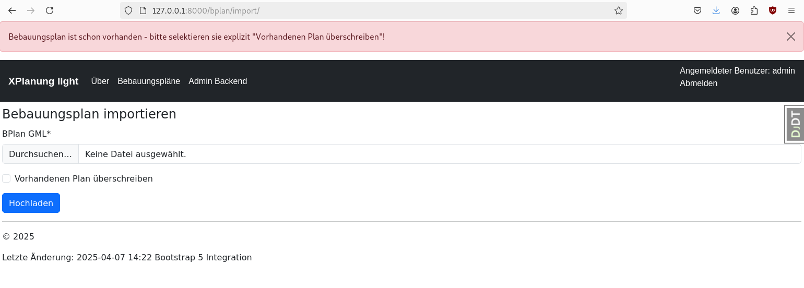Wenn explizit überschreiben selektiert wurde, wird der vorhandene Plan aktualisiert.
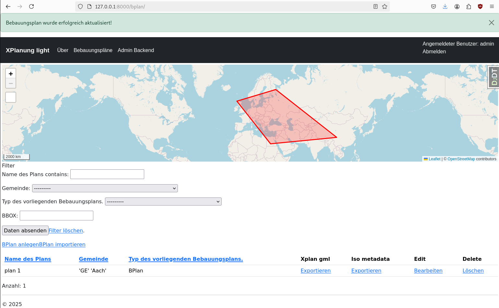Im sqlite-Client sieht man wie sich das auf die History auswirkt
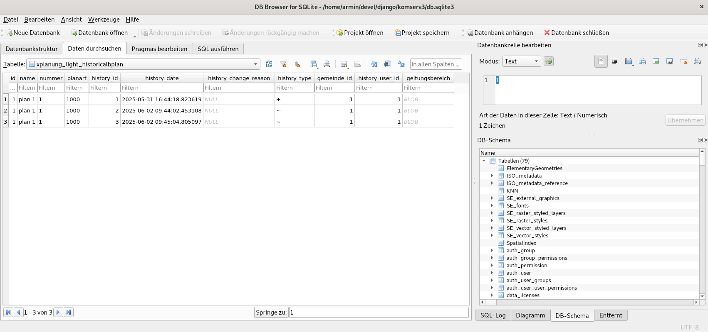Zur Bereitstellung der Planungsdaten über WMS- und WFS-Schnittstellen benötigen wir eine Kartenserverkomponente. Aus Gründen der Einfachheit werden wir hier den UMN-Mapserver einsetzen. Die Serverkomponente benötigt Konfigurationsdateien, die jeweils pro bereitstellender Organisation generiert werden. Die Konfigurationsdatein können entweder statisch abgelegt, oder zur Laufzeit erstellt und eingelesen werden. Der Einfachheit halber, setzen wir zunächst den dynamischen Ansatz um.
Für die Mapserver Integration benötigen wir zwei zusätzliche python Pakete:
mappyfile : Bibliothek zum Parsen, Validieren und erstellen von Mapserver Konfiguretaionsdateien (mapfiles)
mapscript : Interface zu den Mapserver Klassen vis SWIG (Python 3.8+)
Installation in venv:
python3 -m pip install mapscript==7.6.0
python3 -m pip install mappyfile
Aufgrund eines Fehlers wird die C-lib nicht in die venv kopiert - wir müssen das also per Hand nachziehen
Als root
apt install python3-mapscript
Als normaler User
cd komserv2/.venv/lib/python3.9/site-packages/mapscript
cp /usr/lib/python3/dist-packages/mapscript/_mapscript.cpython-39-x86_64-linux-gnu.so _mapscript.so
Der Mapfile Generator baut sich die initiale Konfigurationsdateien aus Templates auf. Die werden in einer eigenen Ordnerstruktur unterhalb von komserv2/xplanung_light/ abgelegt.
mkdir mapserver
mkdir mapserver/mapfile_templates
mkdir mapserver/templates
mkdir mapserver/mapfiles
komserv2/xplanung_light/mapserver/mapfile_templates/map_obj.map
MAP
#NAME "not needed"
STATUS ON
SIZE 450 400
EXTENT 7.293677 50.325436 7.303848 50.331546
UNITS METERS
IMAGECOLOR 255 255 255
#FONTSET "/data/umn/fonts/fonts.txt"
OUTPUTFORMAT
NAME "SHAPEZIP"
DRIVER "OGR/ESRI Shapefile"
MIMETYPE "application/zip"
FORMATOPTION "DSCO:SHAPEFILE=YES"
FORMATOPTION "FORM=zip"
FORMATOPTION "FILENAME=result.zip"
END
OUTPUTFORMAT
NAME "geojson"
DRIVER "OGR/GEOJSON"
MIMETYPE "application/json; subtype=geojson"
FORMATOPTION "STORAGE=memory"
FORMATOPTION "FORM=simple"
FORMATOPTION "FILENAME=result.geojson"
FORMATOPTION "LCO:COORDINATE_PRECISION=5"
END
OUTPUTFORMAT
NAME "CSV"
DRIVER "OGR/CSV"
MIMETYPE "text/csv"
FORMATOPTION "LCO:GEOMETRY=AS_WKT"
FORMATOPTION "STORAGE=filesystem"
FORMATOPTION "FORM=simple"
FORMATOPTION "FILENAME=result.csv"
END
WEB
IMAGEPATH "/tmp/"
IMAGEURL "/tmp/"
METADATA
"wms_feature_info_mime_type" "text/html"
"ows_name" "OWS.0723507001"
"ows_title" "Kommunale Pläne von Aach"
"ows_onlineresource" "http://127.0.0.1:8000/organization/1/ows/"
"ows_srs" "EPSG:31466 EPSG:31467 EPSG:25832 EPSG:4326 EPSG:3857"
"ows_enable_request" "*"
"ows_abstract" "Kommunale Pläne von Aach ..."
"ows_keywordlist" ""
"ows_addresstype" "postal"
"ows_contactorganization" "Gemeinde/Stadt Aach"
"ows_contactperson" ""
"ows_address" ""
"ows_city" ""
"ows_stateorprovince" "DE-RP"
"ows_postcode" ""
"ows_country" "DE"
"ows_contactvoicetelephone" ""
"ows_contactfacsimiletelephone" ""
"ows_contactelectronicmailaddress" ""
"ows_encoding" "UTF-8"
"ows_fees" "NONE"
"wfs_getfeature_formatlist" "OGRGML,SHAPEZIP,CSV,geojson"
END
END
PROJECTION
"init=epsg:4326"
END
LEGEND
STATUS ON
KEYSIZE 12 12
IMAGECOLOR 255 255 255
LABEL
TYPE TRUETYPE
#FONT "Arial"
SIZE 9
END
END
END
komserv2/xplanung_light/mapserver/mapfile_templates/layer_obj.map
LAYER
STATUS ON
NAME "BPlan.0723507001.12"
METADATA
"wms_layer_group" "/Bebauungspläne"
"wms_include_items" "all"
"ows_title" "testplan ohne rechtsstand"
"ows_srs" "EPSG:31466 EPSG:31467 EPSG:25832 EPSG:4326 EPSG:3857"
"ows_abstract" "testplan ohne rechtsstand ..."
"ows_keywordlist" ""
"ows_extent" "7.293677 50.325436 7.303848 50.331546"
"gml_include_items" "all"
"ows_metadataurl_href" "https://geodaten.statistik.rlp.de/metadata/bev4_BEV4L1KREIS.xml"
"ows_metadataurl_format" "text/xml"
"ows_metadataurl_type" "TC211"
END
DUMP TRUE
TEMPLATE "xplanung_light/mapserver/templates/bplan.html"
TYPE POLYGON
CONNECTIONTYPE OGR
CONNECTION "db.sqlite3"
DATA "xplanung_light_bplan"
FILTER ('[id]' = '10')
PROCESSING "CLOSE_CONNECTION=DEFER" # for maximum performance
PROJECTION
"init=epsg:4326"
END
CLASSGROUP "default"
END
komserv2/xplanung_light/mapserver/mapfile_templates/class_obj.map
CLASS
NAME 'Bebauungsplan'
GROUP "default"
#EXPRESSION ([planart] = 1000)
STYLE
WIDTH 3
COLOR 155 155 155
OUTLINECOLOR 0 0 255
END
END
Template für die GetFeatureInfo Operation:
komserv2/xplanung_light/mapserver/templates/bplan.html
<!-- MapServer Template -->
<!DOCTYPE HTML PUBLIC "-//W3C//DTD HTML 4.01 Transitional//EN"
"http://www.w3.org/TR/html4/transitional.dtd">
<html>
<head>
<title>BPlan template</title>
</head>
<body>
Name: [name]
</body>
</html>
Um aus den Templates zur Laufzeit ein Mapfile zu bauen, benötigen wir eine kleine Klasse, die wir im helper-Verzeichnis ablegen.
komserv2/xplanung_light/helper/mapfile.py
import mappyfile
from xplanung_light.models import AdministrativeOrganization, BPlan
from django.contrib.gis.gdal import OGRGeometry
import os, uuid
class MapfileGenerator():
"""
https://github.com/geographika/mappyfile
TODOs:
* use database selection from settings.py instead hardcodes db.sqlite3
"""
def generate_mapfile(self, admin_orga_pk:int, ows_uri:str, metadata_uri:str):
orga = AdministrativeOrganization.objects.get(pk=admin_orga_pk)
bplaene = BPlan.objects.filter(gemeinde=admin_orga_pk)
# open template
current_dir = os.path.dirname(__file__)
map = mappyfile.open(os.path.join(current_dir, "../mapserver/mapfile_templates/map_obj.map"))
"""
Anpassen der Metadaten auf Service Level
"""
map["web"]["metadata"]["ows_name"] = "OWS." + orga.ags
map["web"]["metadata"]["ows_title"] = "Kommunale Pläne von " + orga.name
map["web"]["metadata"]["ows_onlineresource"] = ows_uri
# load layer string from template
with open(os.path.join(current_dir, "../mapserver/mapfile_templates/layer_obj.map")) as file:
layer_file_string = file.read()
layer_from_template = mappyfile.loads(layer_file_string)
# load class for layer from template
with open(os.path.join(current_dir, "../mapserver/mapfile_templates/class_obj.map")) as file:
class_file_string = file.read()
class_from_template = mappyfile.loads(class_file_string)
layer_class = class_from_template.copy()
map['layers'] = []
layer_count = 0
for bplan in bplaene:
layer_count = layer_count + 1
layer = layer_from_template.copy()
if bplan.nummer:
bplan_nummer = bplan.nummer
else:
bplan_nummer = "lc_" + str(layer_count)
#dynamic layer names are not so good ;-)
#bplan_nummer = str(uuid.uuid4())
layer["name"] = "BPlan." + orga.ags + "." + bplan_nummer
metadata = layer_from_template["metadata"].copy()
metadata["ows_title"] = "Bebauungsplan " + bplan.name + " von " + orga.name
metadata["ows_abstract"] = "Bebauungsplan " + bplan.name + " von " + orga.name + " ..."
#layer["metadata"]["wms_extent"] = " ".join([str(i) for i in OGRGeometry(str(bplan.geltungsbereich), srs=4326).extent])
metadata["ows_extent"] = " ".join([str(i) for i in OGRGeometry(str(bplan.geltungsbereich), srs=4326).extent])
metadata["ows_metadataurl_href"] = metadata_uri.replace("/1000000/", "/" + str(bplan.pk) + "/")
layer["metadata"] = metadata
layer["filter"] = "( '[id]' = '" + str(bplan.pk) + "' )"
layer["classes"] = []
#print(str(layer_count) + ": " + bplan.geltungsbereich)
# filter planart cause the others are not defined
#if bplan.geltungsbereich and bplan.planart=="1000":
if bplan.geltungsbereich:
layer["classes"].append(layer_class)
map["layers"].append(layer)
return mappyfile.dumps(map)
Mit Django bauen wir einen einfachen OWS-Proxy für den Mapserver in Form eines Function-based Views. Die Generierung mit mappyfile dauert extrem lange, so dass es besser ist, den mapfile automatisch zu Cachen. Hierzu verwenden wir djangos internes Cache Tool.
# ...
# administrative organizations
class AdministrativeOrganization(GenericMetadata):
# ...
@property
def ags(self):
return self.ls + self.ks + self.vs + self.gs
# ...
komserv2/xplanung_light/views.py
# ...
from django.http import HttpResponse
import mapscript
from urllib.parse import parse_qs
from xplanung_light.helper.mapfile import MapfileGenerator
# for caching mapfiles ;-)
from django.core.cache import cache
from django.conf import settings
# ...
def ows(request, pk:int):
orga = AdministrativeOrganization.objects.get(pk=pk)
req = mapscript.OWSRequest()
"""
req.setParameter( 'SERVICE', 'WMS' )
req.setParameter( 'VERSION', '1.1.0' )
req.setParameter( 'REQUEST', 'GetCapabilities' )
"""
#print(request.META['QUERY_STRING'])
qs = parse_qs(request.META['QUERY_STRING'])
for k, v in qs.items():
#print(k)
#print(v)
req.setParameter(k, ','.join(v))
#print(req)
# test wfs http://127.0.0.1:8000/organization/1/ows/?REQUEST=GetFeature&VERSION=1.1.0&SERVICE=wfs&typename=BPlan.0723507001.12
## first variant - fast - 0.07 seconds
#map = mapscript.mapObj( '/home/armin/devel/django/komserv2/test.map' )
## alternative approach - read from file into string and then from string with special path - also fast - 0.1 seconds
#with open('/home/armin/devel/django/komserv2/test.map') as file:
#map_file_string = file.read()
#map = mapscript.msLoadMapFromString(map_file_string, '/home/armin/devel/django/komserv2/')
## next alternative - slowest - 1.1 seconds
#mapfile = mappyfile.open("/home/armin/devel/django/komserv2/test.map")
#map = mapscript.msLoadMapFromString(mappyfile.dumps(mapfile), '/home/armin/devel/django/komserv2/')
## next alternative - load from dynamically generated mapfile ;-)
mapfile_generator = MapfileGenerator()
metadata_uri = request.build_absolute_uri(reverse('bplan-export-iso19139', kwargs={"pk": 1000000}))
# test to read mapfile from cache
if cache.get("mapfile_" + orga.ags):
cache.touch("mapfile_" + orga.ags, 10)
mapfile = cache.get("mapfile_" + orga.ags)
else:
mapfile = mapfile_generator.generate_mapfile(pk, request.build_absolute_uri(reverse('ows', kwargs={"pk": pk})), metadata_uri)
cache.set("mapfile_" + orga.ags, mapfile, 10)
#print(mapfile)
map = mapscript.msLoadMapFromString(mapfile, str(settings.BASE_DIR) + "/")
mapscript.msIO_installStdoutToBuffer()
dispatch_status = map.OWSDispatch(req)
if dispatch_status != mapscript.MS_SUCCESS:
if dispatch_status == mapscript.MS_DONE:
return HttpResponse("No valid OWS Request!")
if dispatch_status == mapscript.MS_FAILURE:
return HttpResponse("No valid OWS Request not successfully processed!")
content_type = mapscript.msIO_stripStdoutBufferContentType()
mapscript.msIO_stripStdoutBufferContentHeaders()
result = mapscript.msIO_getStdoutBufferBytes()
# [('Content-Type', 'application/vnd.ogc.wms_xml; charset=UTF-8'), ('Content-Length', '11385')]
response_headers = [('Content-Type', content_type),
('Content-Length', str(len(result)))]
assert int(response_headers[1][1]) > 0
http_response = HttpResponse(result)
http_response.headers['Content-Type'] = content_type
http_response.headers['Content-Length'] = str(len(result))
return http_response
Die URL zum OWS-Proxy muss noch in die urls.py - hier wird ein Dienst pro Organisation erstellt.
komserv2/xplanung_light/urls.py
# ows proxy for organization
# ....
path("organization/<int:pk>/ows/", views.ows, name="ows"),
# ...
Anlegen der Endpunkte für die OGC-Dienste und einer Übersichtsseite um die Endpunkte anzuzeigen.
komserv2/xplanung_light/urls.py
# ...
from xplanung_light.views import AdministrativeOrganizationPublishingListView
# ...
# urls for administrativeorganization
path("organization/publishing/", AdministrativeOrganizationPublishingListView.as_view(), name="organization-publishing-list"),
# ows proxy for organization
path("organization/<int:pk>/ows/", views.ows, name="ows"),
# ...
komserv2/xplanung_light/templates/xplanung_light/orga_publishing_list.html
{% extends "xplanung_light/layout.html" %}
{% load leaflet_tags %}
{% block title %}
Liste der Publizierenden Organisationen
{% endblock %}
{% load render_table from django_tables2 %}
{% block content %}
<!-- add boostrap form css -->
{% load django_bootstrap5 %}
{% render_table table %}
<p>Anzahl: {{ object_list.count }}</p>
{% endblock %}
komserv2/xplanung_light/tables.py
# ...
import django_tables2 as tables
from .models import BPlan, AdministrativeOrganization
from django_tables2 import Column
from django_tables2.utils import A
from django.urls import reverse
from django.utils.html import format_html
# ...
class AdministrativeOrganizationPublishingTable(tables.Table):
num_bplan = tables.Column(verbose_name="Zahl BPläne")
wms = tables.LinkColumn('ows', text='WMS', args=[A('pk')], \
orderable=False, empty_values=())
wfs = tables.LinkColumn('ows', text='WFS', args=[A('pk')], \
orderable=False, empty_values=())
# https://stackoverflow.com/questions/36698387/how-to-add-get-parameters-to-django-tables2-linkcolumn
def render_wms(self, record):
url = reverse('ows', kwargs={'pk': record.id})
return format_html('<a href="{}?REQUEST=GetCapabilities&SERVICE=WMS">{}</a>', url, 'WMS GetCapabilities')
def render_wfs(self, record):
url = reverse('ows', kwargs={'pk': record.id})
return format_html('<a href="{}?REQUEST=GetCapabilities&SERVICE=WFS">{}</a>', url, 'WFS GetCapabilities')
class Meta:
model = AdministrativeOrganization
template_name = "django_tables2/bootstrap5.html"
fields = ("name", "ags", "num_bplan", "wms", "wfs", )
komserv2/xplanung_light/views.py
# ...
from xplanung_light.tables import BPlanTable, AdministrativeOrganizationPublishingTable
from django.db.models import Count
# ...
class AdministrativeOrganizationPublishingListView(SingleTableView):
model = AdministrativeOrganization
table_class = AdministrativeOrganizationPublishingTable
template_name = 'xplanung_light/orga_publishing_list.html'
success_url = reverse_lazy("orga-publishing-list")
def get_queryset(self):
qs = AdministrativeOrganization.objects.filter(bplan__isnull=False).distinct().annotate(num_bplan=Count('bplan'))
return qs
komserv2/xplanung_light/templates/xplanung_light/layout.html
<!-- ... -->
<ul class="navbar-nav me-auto mb-2 mb-lg-0">
{% if user.is_authenticated %}
<li class="nav-item">
<a class="nav-link" aria-current="page" href="{% url 'bplan-list' %}">Bebauungspläne</a>
</li>
<li class="nav-item">
<a class="nav-link" aria-current="page" href="{% url 'organization-publishing-list' %}">Publizierende Organisationen</a>
</li>
{% endif %}
<li class="nav-item">
<a class="nav-link" aria-current="page" href="{% url 'about' %}">Über</a>
</li>
{% if user.is_authenticated %}
<li class="nav-item">
<a class="nav-link" aria-current="page" href="{% url 'admin:index' %}">Admin Backend</a>
</li>
{% endif %}
</ul>
<!-- ... -->
Hier wird das HistoryModel zur Hilfe genommen - thx @jonas ;-)
# ...
from django.db.models import Count
from django.db.models import Subquery, OuterRef
# ...
class BPlanListView(FilterView, SingleTableView):
model = BPlan
table_class = BPlanTable
template_name = 'xplanung_light/bplan_list.html'
success_url = reverse_lazy("bplan-list")
filterset_class = BPlanFilter
def get_context_data(self, **kwargs):
context = super().get_context_data(**kwargs)
context["markers"] = json.loads(
serialize("geojson", context['table'].page.object_list.data, geometry_field='geltungsbereich')
)
return context
def get_queryset(self):
qs = BPlan.objects.select_related('gemeinde').annotate(last_changed=Subquery(
BPlan.history.filter(id=OuterRef("pk")).order_by('-history_date').values('history_date')[:1]
)).order_by('-last_changed')
self.filter_set = BPlanFilter(self.request.GET, queryset=qs)
return self.filter_set.qs
# ...

{kind=link}
{kind=link}
{kind=link}
{kind=link}
{kind=link}
{kind=link}
{kind=link}
{kind=link}
{kind=link}
{kind=link}
{kind=link}
{kind=link}
{kind=link}
{kind=link}
{kind=link}
{kind=link}
{kind=link}
{kind=link}
{kind=link}
{kind=link}
{kind=link}
{kind=link}
{kind=link}